<!doctype html>
<html lang="en">
<head>
  <meta charset="utf-8">
  <meta name="viewport" content="width=device-width, initial-scale=1">
  <title>arxiv digest — 2026-10-06</title>
  <style>
:root {
  --bg: #ffffff;
  --fg: #1f2328;
  --muted: #59636e;
  --border: #d0d7de;
  --card: #f6f8fa;
  --link: #0969da;
}
body {
  max-width: 980px;
  margin: 0 auto;
  padding: 2rem 1rem 5rem;
  font-family: -apple-system, BlinkMacSystemFont, "Segoe UI", Helvetica, Arial, sans-serif;
  line-height: 1.55;
  color: var(--fg);
  background: var(--bg);
}
a { color: var(--link); }
img { max-width: 100%; height: auto; }
pre, code { background: var(--card); border-radius: 6px; }
pre { padding: 1rem; overflow-x: auto; }
blockquote { border-left: 4px solid var(--border); padding-left: 1rem; color: var(--muted); }
details { margin: 0.6rem 0; }
summary { cursor: pointer; font-weight: 600; }
.paper-figures-scroll {
  display: flex;
  gap: 1rem;
  overflow-x: auto;
  overscroll-behavior-x: contain;
  padding: 0.75rem 0.25rem 1rem;
  margin: 1rem 0 1.25rem;
  border-top: 1px solid var(--border);
  border-bottom: 1px solid var(--border);
  scroll-snap-type: x proximity;
}
.paper-figure-card {
  flex: 0 0 min(260px, 72vw);
  scroll-snap-align: start;
  background: var(--card);
  border: 1px solid var(--border);
  border-radius: 12px;
  padding: 0.55rem;
}
.paper-figure-card img {
  display: block;
  width: 100%;
  max-height: 240px;
  object-fit: contain;
  background: white;
  border-radius: 8px;
}
.paper-figure-caption {
  display: block;
  margin-top: 0.5rem;
  color: var(--muted);
  font-size: 0.85rem;
}
.figure-strip-hint {
  color: var(--muted);
  font-size: 0.9rem;
  margin-bottom: -0.3rem;
}
</style>
  <!-- MathJax: renders $...$ inline math and $$...$$ display math, plus
       \(...\) and \[...\]. Loaded from the official CDN; works offline
       once cached. Configured to skip code/pre blocks so arxiv IDs that
       look like dollar amounts don't get mangled. -->
  <script>
    window.MathJax = {
      tex: {
        inlineMath: [['$', '$'], ['\\(', '\\)']],
        displayMath: [['$$', '$$'], ['\\[', '\\]']],
        processEscapes: true,
        processEnvironments: true
      },
      options: {
        skipHtmlTags: ['script', 'noscript', 'style', 'textarea', 'pre', 'code'],
        ignoreHtmlClass: 'tex2jax_ignore',
        processHtmlClass: 'tex2jax_process'
      }
    };
  </script>
  <script id="MathJax-script" async
    src="https://cdn.jsdelivr.net/npm/mathjax@3/es5/tex-chtml.js"></script>
</head>
<body>
<header style="background-color: #333; color: white; padding: 15px; margin-bottom: 20px;">
  <h1 style="margin: 0; font-size: 24px;">
    <a href="https://ochelpan.github.io/arXiv_clean/" style="color: white; text-decoration: none;">Main</a>
  </h1>
</header>

<h1>Daily arXiv Report</h1>

<hr>
<p>
<a href="index.html">← Index</a>
 · <a href="papers_06.html">← Previous</a> · <a href="papers_08.html">Next →</a>
</p>
<hr>

<h2>Papers 121–140</h2>
<p><a id="paper-2610.03557"></a></p>
<h3 id="a-graph-theoretic-analysis-of-non-generic-free-fermion-solvability-by-krylov-decompositions"><a href="http://arxiv.org/abs/2610.03557v1">A graph-theoretic analysis of non-generic free-fermion solvability by Krylov decompositions</a></h3>
<p><strong>Authors:</strong> Jannis Ruh, Samuel J. Elman, Adrian Chapman<br>
<strong>Type:</strong> theory · <strong>Category:</strong> strongly correlated electrons · <strong>PDF:</strong> <a href="https://arxiv.org/pdf/2610.03557v1">https://arxiv.org/pdf/2610.03557v1</a><br>
<strong>Analysis basis:</strong> full PDF text, analyzed in chunks</p>
<div class="figure-strip-hint">↔ Scroll figures horizontally</div>
<div class="paper-figures-scroll">
<figure class="paper-figure-card">
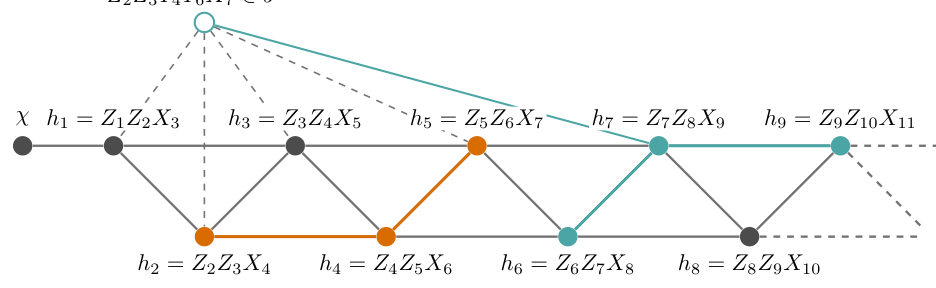
<figcaption class="paper-figure-caption"><b>Fig 1.</b> FIG. 1. The zigzag-ladder frustration graph of the FFD Hamiltonian in Eq. (1), together with the simplicial mode χ, which neighbors only h1. The term Z2Z3Y4Y6X7 ∈J(5), obtained as the product h2h4h5 along the induced path highlighted in orange, is also shown. This path is the symmetric difference of the anchored induced paths χ–h1 and χ–h1–h2–h4–h5, of lengths 1 and 4 (summing to 5), so the new term occurs in the Krylov current J(5). Including this term introduces a claw with center at h7, shown in teal together with its pairwise non-adjacent neighbors.</figcaption>
</figure>
<figure class="paper-figure-card">
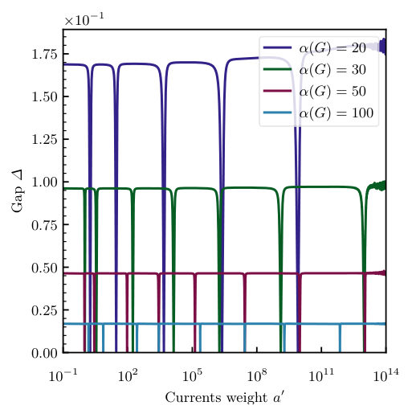
<figcaption class="paper-figure-caption"><b>Fig 2.</b> FIG. 3. The energy gap, ∆, of the model in Eqs. (C17) and (15) at the isotropic point α = β = γ = 1 with aℓ= a for all ℓand different model sizes α(G). The minima are contin- uous and genuine zeros, resolved as the sampling resolution is increased. For high a &gt; 1013 the skew-diagonalisation nu- merics become noisy.</figcaption>
</figure>
<figure class="paper-figure-card">
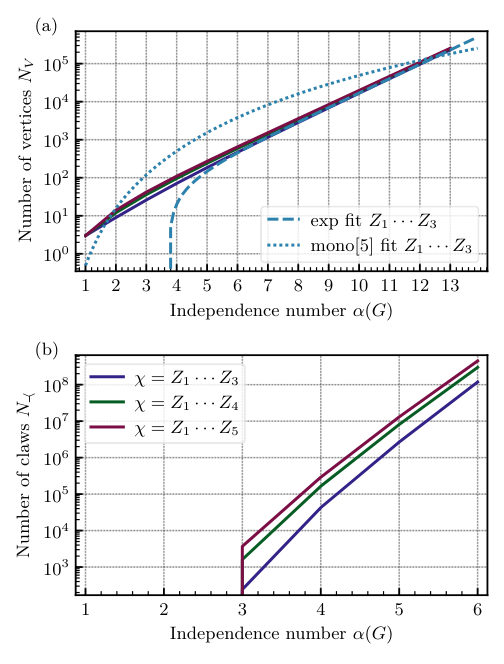
<figcaption class="paper-figure-caption"><b>Fig 3.</b> FIG. 2. (a) The number of vertices NV in the frustration graph of the model in Eq. (7) depending on the independence number α(G), for (the) three different choices of simplicial modes. The case χ = Z1Z2Z3 is fitted with an exponential function, exp, and a monomial, mono[5], defined in Eqs. (13) and (14) respectively. (b) The number of claws N−⟨in the frustration graph of the model in Eq. (7) depending on the independence number α(G), for (the) three different choices of simplicial modes.</figcaption>
</figure>
<figure class="paper-figure-card">
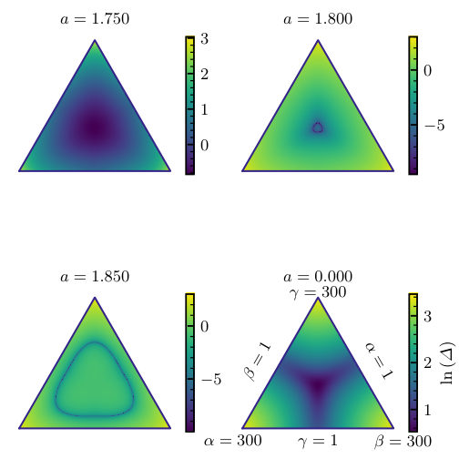
<figcaption class="paper-figure-caption"><b>Fig 4.</b> FIG. 4. The phase diagram of the model in Eqs. (C17) and (15) for α(G) = 20 and aℓ= a chosen around the first minimum that we see in Fig. 3, for all ℓ. The bottom-right diagram shows the axes labels. It holds α + β + γ = 302 (note that this absolute value can be renormalised; more in- teresting are the relative values of α, β and γ to each other; also note that we do not allow these parameters to be zero, e.g., we never have α = 0, in the numerical calculations as this causes instabilities, however, as we choose the maximal value fairly high, the relative values approximate this case, i.e., 1/300 ≈0). Figure 6 shows the same phase diagrams, however, with more aℓ= a sample values, and Fig. 7...</figcaption>
</figure>
<figure class="paper-figure-card">
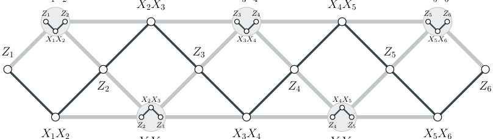
<figcaption class="paper-figure-caption"><b>Fig 5.</b> FIG. 5. The transverse-field Ising model as a seed: from paths in the TFIM, we can construct all other models which admit an exact solution via a linear mapping to free fermions. Here we depict the construction of the XY model from paths in the frustration graph of the TFIM. The TFIM runs zigzag through the XY model as a black line, with the other terms formed from products of paths in this model.</figcaption>
</figure>
</div>
<p><strong>Summary.</strong> This work develops a graph-theoretic framework to classify quantum spin models that are exactly solvable via free-fermion mappings. By constructing 'Krylov currents' based on the frustration graph, the authors systematically generate a family of non-generically solvable Hamiltonians. This provides a powerful, systematic route for finding and characterizing complex, exactly solvable many-body systems.</p>
<p><strong>Why it may be interesting.</strong> The rigorous graph-theoretic approach to classifying exactly solvable models provides powerful tools for understanding quantum many-body physics, especially in regimes where simple mean-field or generic approximations fail.</p>
<details>
<summary>Detailed structure</summary>
<p><strong>Main problem.</strong> The paper characterizes the structural conditions under which quantum spin models, particularly those related to the FFD chain, admit free-fermion solutions, distinguishing between generic and non-generic solvability.</p>
<p><strong>Main result.</strong> The authors identify 'path support' as a signature of non-generic solvability and provide a systematic method using 'Krylov currents' to generate an entire family of non-generically solvable, exactly solvable Hamiltonians.</p>
<p><strong>Method.</strong> The analysis combines graph theory (using the frustration graph) with advanced algebraic techniques, including the construction of Krylov currents and the use of path-product expansions.</p>
<p><strong>Model / system.</strong> The primary model is the Free-fermion-in-disguise (FFD) chain, a 1D spin-chain Hamiltonian involving Pauli operators. The study extends this to non-generic solvable extensions $H_{NG}[a, b]$ by adding terms derived from Krylov currents.</p>
<p><strong>Key observables.</strong> Path support, energy gap ($\Delta$), and the structure of the generated Lie algebra ($\mathfrak{so}(d)$).</p>
<p><strong>Important parameters / regimes.</strong> Coupling strengths (which determine generic vs. non-generic solvability), and the graph structure parameters like $\alpha(G)$ (number of consecutive disjunct triangles).</p>
<p><strong>Assumptions / limitations.</strong> The necessity of the path-product representation for free-fermion solvability is conjectured, and the analysis relies on specific anticommutation relations derived from the graph structure.</p>
<p><strong>Figures summary.</strong> Figures illustrate the frustration graph of the FFD chain, the construction of Krylov currents from induced paths, and numerical results showing the dependence of the energy gap on the current strength.</p>
<p><strong>Paper structure.</strong> The paper proceeds by defining the FFD model and its graph structure, introducing Krylov currents as the mechanism for non-generic extensions, proving the path-product expansion for these currents, and finally establishing the algebraic structure generated by these currents.</p>
</details>
<details>
<summary>Abstract</summary>
<p>Exactly solvable models are often identified from structural features of their interactions. For quantum spin Hamiltonians, these are captured by the frustration graph of anticommuting Pauli terms. The frustration graph characterizes broad families of spin models that map to free fermions for arbitrary, or generic, values of their coupling strengths. Nevertheless, there exist non-generically solvable models that admit free-fermion solutions only at finely tuned couplings. In this work, we characterize a family of such models in terms of graph structures. Given an arbitrary instance of Fendley's free-fermions-in-disguise (FFD) chain, we construct a set of operators, called Krylov currents, that are exactly quadratic in its effective fermionic modes and thus extend it to a linear family of free-fermion solvable Hamiltonians. As the Krylov currents are nonlinear in the FFD Hamiltonian terms, the elements of this generated family are non-generically solvable, and they accordingly fail the known conditions for generic solvability. We prove that every Krylov current admits an expansion in terms of induced paths of the frustration graph and that they generate the full special-orthogonal algebra of Gaussian transformations. Our results identify path support as a signature of non-generic solvability, and they provide a systematic route to finding exactly solvable many-body Hamiltonians.</p>
</details>
<p><sub><a href="#top">↑ back to top</a></sub></p>

<p><a id="paper-2610.03663"></a></p>
<h3 id="barc-codes-general-polynomial-framework-for-coherent-state-superposition-codes"><a href="http://arxiv.org/abs/2610.03663v1">BARC codes: general polynomial framework for coherent-state superposition codes</a></h3>
<p><strong>Authors:</strong> Praneel Gore, Davit Aghamalyan, Varun Narasimhachar, Andrew Tanggara<br>
<strong>Type:</strong> theory · <strong>Category:</strong> quantum information and computing · <strong>PDF:</strong> <a href="https://arxiv.org/pdf/2610.03663v1">https://arxiv.org/pdf/2610.03663v1</a><br>
<strong>Analysis basis:</strong> full PDF text, analyzed in chunks</p>
<div class="figure-strip-hint">↔ Scroll figures horizontally</div>
<div class="paper-figures-scroll">
<figure class="paper-figure-card">
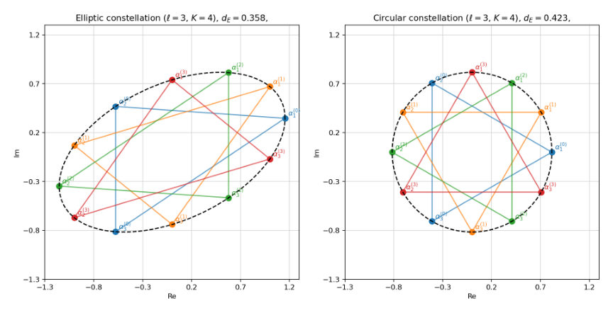
<figcaption class="paper-figure-caption"><b>Fig 1.</b> FIG. 1: Ellipsoid constellations C(0), C(1), C(2), C(3) spanning a 4-dimensional BARC code encoded in a single mode, with minimum separation ∆= √dE, where each constellation state is a uniform superposition of 3 coherent states. The plots show the two real phase-space coordinates of that mode. The left panel has (τx, τy, τxy) = (2, 1, 0.6), minimum separation ∆= √dE ≈0.358, and C(k) a†a C(k) ≈0.451. The right panel has (τx, τy, τxy) = (1, 1, 0), ∆≈0.423, and energy C(k) a†a C(k) ≈0.142 per constellation state. The distance labels in the panels report ∆, whereas dE denotes squared Euclidean resolution; (τx, τy, τxy) are as defined in 117.</figcaption>
</figure>
<figure class="paper-figure-card">
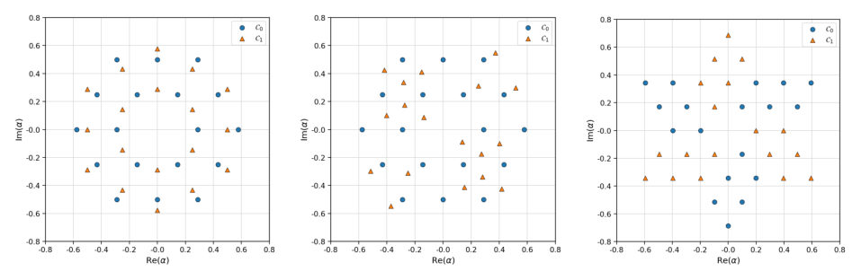
<figcaption class="paper-figure-caption"><b>Fig 2.</b> FIG. 2: Constellations for single-mode Hex1-18, Hex2-18, and Hex3-18 BARC codes from Sec- tion VIII A. Each construction gives two normalized constellation states, each a uniform superpo- sition of 18 coherent states. The panels illustrate their geometries at a fixed reference scale, where (τx, τy, τxy) = (2, 2, 0); the actual operating scale is varied and optimized in our numerical results reported in section IX. Left: Hex1-18 uses the origin-excluded radius-two patch and relative rotation π/2 (VIII A 0 a). Center: Hex2-18 uses balanced opposite shifts followed by rewhitening (VIII A 0 b). Right: Hex3-18 uses six chosen sixfold orbits with alternating triangle colors.(VIII A 0 c)</figcaption>
</figure>
<figure class="paper-figure-card">
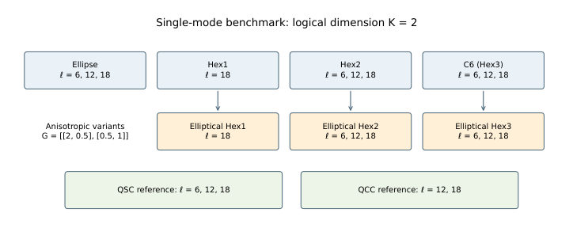
<figcaption class="paper-figure-caption"><b>Fig 3.</b> FIG. 3: Benchmarked families and available constellation sizes. Arrows indicate the anisotropic hexagonal variants; references are the specific QSC and QCC constructions used here.</figcaption>
</figure>
<figure class="paper-figure-card">
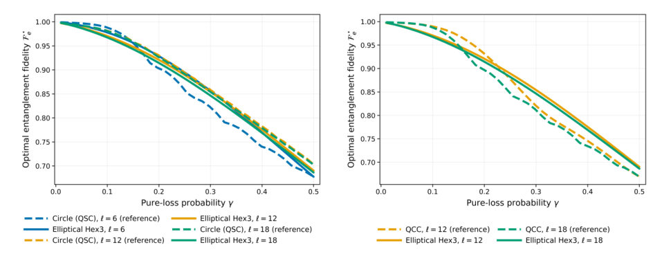
<figcaption class="paper-figure-caption"><b>Fig 4.</b> FIG. 4: Fixed-amplitude loss sweeps for Elliptical Hex3. The candidate is compared with QSC (left) and QCC (right). Each code uses its own sampled optimum at γ0 = 0.095, held fixed across the loss sweep, while recovery is reoptimized at each loss probability. The Elliptical Hex2 and Elliptical Hex1 loss sweeps are provided in Section F 1.</figcaption>
</figure>
<figure class="paper-figure-card">
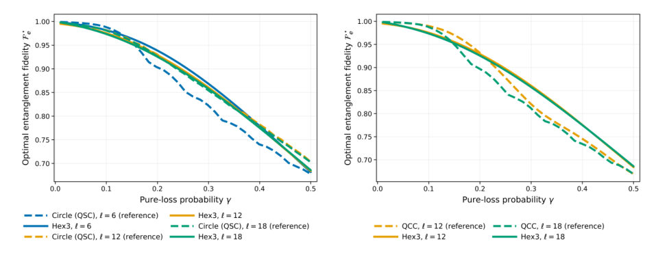
<figcaption class="paper-figure-caption"><b>Fig 5.</b> FIG. 5: Fixed-amplitude loss sweeps for Hex3. The candidate is compared with the equal-size QSC (left) and QCC (right). Candidate and reference amplitudes are selected independently at γ0 = 0.095 and held fixed across the loss scan, while recovery is reoptimized at each loss probability. The Hex2 and Hex1 loss sweeps are provided in Section F 1.</figcaption>
</figure>
</div>
<p><strong>Summary.</strong> This paper introduces BARC codes, a new class of quantum error-correcting codes for bosonic systems, by framing the error-correcting constraints within an algebraic geometry framework. The authors use polynomial systems to systematically construct these codes, providing explicit examples like ellipsoidal and hexagonal codes. This offers a powerful, general method for designing robust quantum codes against realistic photon loss errors.</p>
<p><strong>Why it may be interesting.</strong> This work provides a powerful, abstract algebraic toolset to systematically discover and analyze quantum error-correcting codes for bosonic systems, which is highly relevant to quantum optics and quantum information theory.</p>
<details>
<summary>Detailed structure</summary>
<p><strong>Main problem.</strong> The paper aims to develop a systematic, general algebraic framework for constructing novel bosonic quantum error-correcting codes.</p>
<p><strong>Main result.</strong> They introduce Bosonic Algebraically-Restricted Constellation (BARC) codes, defined by polynomial constraints derived from treating the Knill-Laflamme conditions as algebraic equations.</p>
<p><strong>Method.</strong> The methodology combines tools from algebraic geometry and commutative algebra (polynomial systems, ideals) to solve moment equations that characterize the code states.</p>
<p><strong>Model / system.</strong> The system involves bosonic quantum states represented by superpositions of coherent states in an infinite-dimensional Hilbert space, designed to correct for photon-gain and photon-loss errors.</p>
<p><strong>Key observables.</strong> Minimum geometric separation between constellation points, and entanglement fidelity when benchmarking against established codes.</p>
<p><strong>Important parameters / regimes.</strong> The degree of the polynomial constraints, the noise type (e.g., pure-loss noise), and the constellation weight.</p>
<p><strong>Assumptions / limitations.</strong> The initial explicit constructions are limited to the single-mode, uniform-weight case, and the derivation involves approximating exact matrix elements by discarding certain overlap terms.</p>
<p><strong>Figures summary.</strong> The notes reference tables detailing specific parameters ($\alpha^\star_{C}$, $ar{n}^\star_{C}$, $\Delta^\star_{C}$, $s^\star_{C}$) for various benchmarked code families (Hex3, Ellipse, QSC, QCC).</p>
<p><strong>Paper structure.</strong> The paper establishes the general algebraic framework (BARC codes) by relating error correction to polynomial constraints, derives necessary moment equations, and then benchmarks the constructed codes against known families using fidelity metrics.</p>
</details>
<details>
<summary>Abstract</summary>
<p>We introduce an algebraic framework for constructing a new class of quantum error-correcting codes, bosonic algebraically-restricted constellation (BARC) codes. The code states are finite superpositions of coherent-state constellations constrained by symmetries of solution sets to multivariate complex polynomial systems. The constraints are associated with photon-gain and photon-loss errors, thereby imposing approximate Knill--Laflamme conditions for such errors. For equally-weighted constellation points, we derive upper bounds on the minimum geometric separation between points, indicating how noise-resilient the code is. In the single-mode case, we characterize degree-two polynomial solution sets using an orthogonal group symmetry to obtain explicit ellipsoidal and hexagonal BARC codes. We benchmark representative instances of these families against spherical and cubature codes using the entanglement fidelity with optimal recovery under pure-loss noise.</p>
</details>
<p><sub><a href="#top">↑ back to top</a></sub></p>

<p><a id="paper-2610.03655"></a></p>
<h3 id="breaking-the-cubic-barrier-for-the-inverse-free-solovay-kitaev-algorithm"><a href="http://arxiv.org/abs/2610.03655v1">Breaking the cubic barrier for the inverse-free Solovay-Kitaev algorithm</a></h3>
<p><strong>Authors:</strong> Adam Bouland, Victor Shyaka, Chenyi Zhang<br>
<strong>Type:</strong> theory · <strong>Category:</strong> quantum information and computing · <strong>PDF:</strong> <a href="https://arxiv.org/pdf/2610.03655v1">https://arxiv.org/pdf/2610.03655v1</a><br>
<strong>Analysis basis:</strong> full PDF text, analyzed in chunks</p>
<div class="figure-strip-hint">↔ Scroll figures horizontally</div>
<div class="paper-figures-scroll">
<figure class="paper-figure-card">
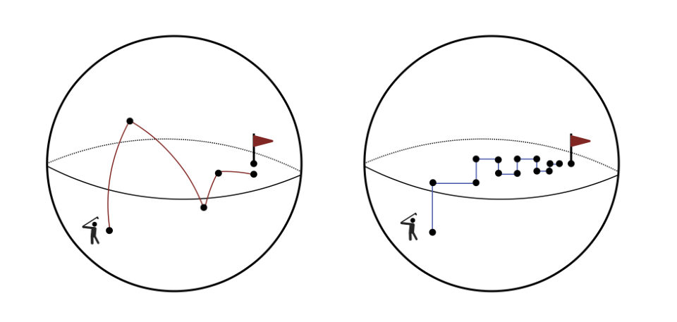
<figcaption class="paper-figure-caption"><b>Fig 1.</b> Figure 1: Illustration of (Left) doubly-exponential convergence of Kuperberg’s algorithm [Kup23] vs. (Right) singly-exponential convergence of our Pauli Golf method.</figcaption>
</figure>
<figure class="paper-figure-card">
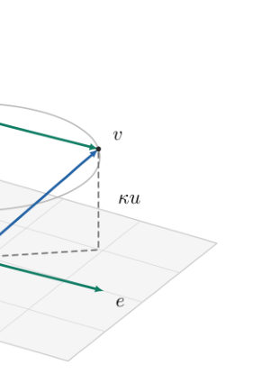
<figcaption class="paper-figure-caption"><b>Fig 2.</b> Figure 2: The geometric intuition of Lemma 4.4</figcaption>
</figure>
</div>
<p><strong>Summary.</strong> This paper presents significant theoretical improvements to the Solovay-Kitaev algorithm for quantum computation when the available gate set lacks inverses. By developing sophisticated recursive approximation techniques and analyzing directed unitaries, the authors demonstrate an IFSK exponent below the established cubic barrier of 3. This work shows that current compilation methods can be significantly more efficient than previously thought, advancing the field of quantum circuit synthesis.</p>
<p><strong>Why it may be interesting.</strong> This work directly advances the theoretical understanding of quantum computation complexity, providing concrete algorithmic improvements that challenge established information-theoretic limits for gate compilation.</p>
<details>
<summary>Detailed structure</summary>
<p><strong>Main problem.</strong> The paper aims to improve the exponent of the inverse-free Solovay-Kitaev (IFSK) algorithm, which compiles quantum unitaries using gate sets that lack inverses.</p>
<p><strong>Main result.</strong> The authors achieve an IFSK exponent for a qubit of at most $\approx 2.988$, surpassing the known information-theoretic bound of 3, and also show an exponent of $\le 2.138$ for a specific Pauli-supplemented gate set.</p>
<p><strong>Method.</strong> The methods involve constructing highly accurate directed unitaries and employing recursive approximation schemes, building upon techniques like 'Pauli golf' and fixed-point iteration analysis.</p>
<p><strong>Model / system.</strong> The system is a single qubit ($ ext{SU}(2)$), and the problem is compiling an arbitrary target unitary $U$ to a specified accuracy $\epsilon$ using a given, potentially non-inverse-closed, universal gate set $G$.</p>
<p><strong>Key observables.</strong> The primary observable is the exponent $b$ in the complexity $O(\log_b(1/\epsilon))$ of the compilation algorithm.</p>
<p><strong>Important parameters / regimes.</strong> The key parameters are the target accuracy $\epsilon$, and the exponent itself, which is compared against the information-theoretic bound of 3.</p>
<p><strong>Assumptions / limitations.</strong> The analysis relies on the existence and computability of fixed points derived from error-bounding functions, and the applicability of recursive bounds for sufficiently small $\epsilon$.</p>
<p><strong>Figures summary.</strong> The notes mention Figure 1 illustrating convergence rates, comparing doubly-exponential convergence (Kuperberg's algorithm) to the single-exponential scaling achieved by the new algorithms.</p>
<p><strong>Paper structure.</strong> The paper develops algorithms (FullCompile and DirectedUnitary) that recursively approximate the target unitary. The core mathematical machinery involves establishing error bounds using lemmas (e.g., Lemma 4.7, Lemma 4.8) derived from analyzing the structure of the approximation sequence $P_{24}$ and solving for necessary parameters via fixed-point iteration.</p>
</details>
<details>
<summary>Abstract</summary>
<p>The Solovay-Kitaev algorithm states that it is possible to efficiently compile unitaries to accuracy $ε$ in $\text{polylog}(1/ε)$ time using any universal gate set. While Solovay and Kitaev's initial work addressed inverse-closed gate sets, recently Bouland and Giurgicǎ-Tiron showed it is possible to efficiently compile arbitrary gate sets without inverses. However, the exponent of their compilation algorithm is high. For example the inverse-free exponent for a qubit is over $8.62$, while information theoretically it is known that an inverse-free exponent of $3$ is possible in any dimension by a result of Oszmaniec, Sawicki, and Horodecki. This leads to a natural question: can one improve the exponent in Bouland and Giurgicǎ-Tiron's algorithm? And are there any cases where the inverse-free exponent is below 3, thus surpassing existing information-theoretic arguments?   To answer this question, we first show that a special case of the inverse-free compiling problem -- namely Pauli gates supplemented by an irrational rotation of a qubit - admits a highly efficient compilation algorithm with an exponent at most $\approx 2.138$.   Our algorithm fuses ideas from prior algorithms of Kuperberg and Sardharwalla, Cubitt, Harrow and Linden to construct an efficient <code>Pauli golf'' compilation routine. We then extend these ideas to the general inverse-free case for a qubit, where we give a compiling algorithm with exponent at most $2.988$. This result uses a novel form of approximate</code>aiming'' of unitary corrections to improve the compilation efficiency. Our results give two examples of quantum compiling algorithms surpassing information-theoretic arguments, and demonstrate that there are many efficiency gains possible for inverse-free compilation.</p>
</details>
<p><sub><a href="#top">↑ back to top</a></sub></p>

<p><a id="paper-2610.03260"></a></p>
<h3 id="compiling-together-high-throughput-distributed-quantum-computing-via-multi-compilation"><a href="http://arxiv.org/abs/2610.03260v1">Compiling Together: High-Throughput Distributed Quantum Computing via Multi-Compilation</a></h3>
<p><strong>Authors:</strong> Yipei Liu, Sen Zhang, Zebo Yang, Lei Yang<br>
<strong>Type:</strong> both · <strong>Category:</strong> quantum information and computing · <strong>PDF:</strong> <a href="https://arxiv.org/pdf/2610.03260v1">https://arxiv.org/pdf/2610.03260v1</a><br>
<strong>Analysis basis:</strong> full PDF text, analyzed in chunks</p>
<div class="figure-strip-hint">↔ Scroll figures horizontally</div>
<div class="paper-figures-scroll">
<figure class="paper-figure-card">
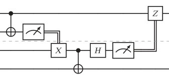
<figcaption class="paper-figure-caption"><b>Fig 1.</b> Figure 1. Remote 2-qubit gate (telegate) between data qubits on two QPUs using a Bell pair and classical commu- nication.</figcaption>
</figure>
<figure class="paper-figure-card">
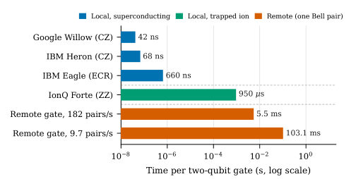
<figcaption class="paper-figure-caption"><b>Fig 2.</b> Figure 2. Comparison of local two-qubit gate latency and Bell-pair generation time for remote quantum operations.</figcaption>
</figure>
<figure class="paper-figure-card">
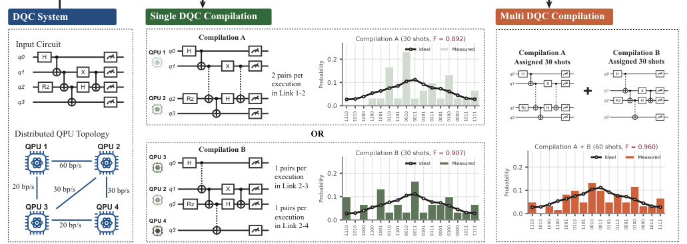
<figcaption class="paper-figure-caption"><b>Fig 3.</b> Figure 3. A four-QPU example illustrating complementary compilations and the fidelity improvement obtained by merging their measurement results. Under the same Bell-pair capacities, a single compilation exploits only part of the DQC resources and executes 30 shots, whereas multiple compilations achieve 60 shots with higher fidelity.</figcaption>
</figure>
<figure class="paper-figure-card">
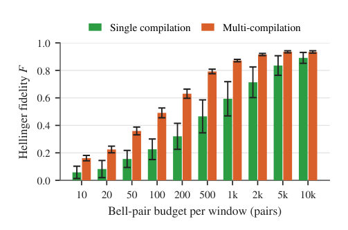
<figcaption class="paper-figure-caption"><b>Fig 4.</b> Figure 4. Fidelity under different Bell-pair budgets for single- and multi-compilation execution. Bars show mean ± standard deviation over 20 independent replicates.</figcaption>
</figure>
<figure class="paper-figure-card">
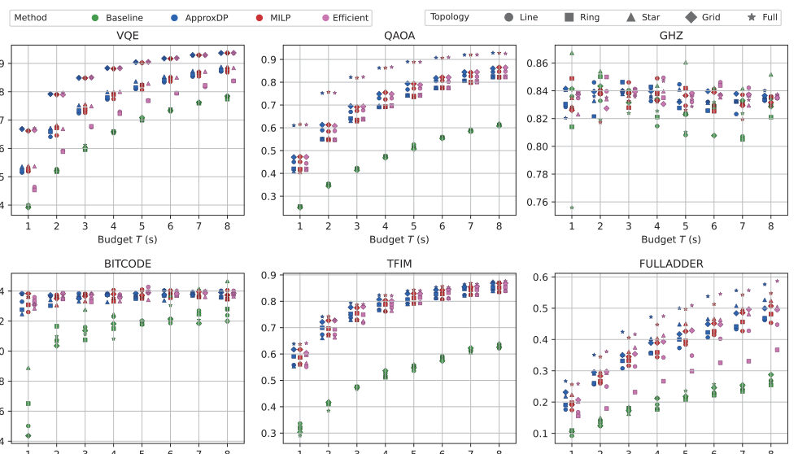
<figcaption class="paper-figure-caption"><b>Fig 5.</b> Figure 6. Simulation fidelity versus time budget for six 10-qubit circuit workloads. Colors denote allocation methods, markers denote six-QPU topologies.</figcaption>
</figure>
</div>
<p><strong>Summary.</strong> This paper tackles the throughput bottleneck in Distributed Quantum Computing by proposing 'multi-compilation,' which runs several logically equivalent circuit compilations simultaneously. By optimizing the joint selection and allocation of these candidates under limited entanglement resources, the authors significantly boost computational throughput and improve result fidelity. The solution is formulated as an NP-hard optimization problem solved using advanced techniques like MILP.</p>
<p><strong>Why it may be interesting.</strong> The work directly addresses resource management and scaling limitations in distributed quantum architectures, which is crucial for realizing fault-tolerant quantum computation across modular hardware platforms.</p>
<details>
<summary>Detailed structure</summary>
<p><strong>Main problem.</strong> The primary challenge is maximizing the throughput of quantum computation on a Distributed Quantum Computing (DQC) network limited by the finite, rate-constrained generation of entanglement (Bell pairs) across communication links.</p>
<p><strong>Main result.</strong> By employing multi-compilation—running logically equivalent circuits concurrently—the method significantly boosts throughput (up to 4.5x in simulation) and improves output fidelity compared to using a single compilation.</p>
<p><strong>Method.</strong> The problem is formulated as Candidate-Constrained Max-Shot Allocation (CMA), an NP-hard optimization problem, solved using dynamic programming, MILP, and a greedy heuristic.</p>
<p><strong>Model / system.</strong> The model is a DQC network connecting multiple Quantum Processing Units (QPUs) via communication links, where the resource bottleneck is the rate at which Bell pairs can be generated on these links.</p>
<p><strong>Key observables.</strong> Throughput (shots/s), output fidelity, and Bell-pair utilization across inter-QPU links.</p>
<p><strong>Important parameters / regimes.</strong> Bell-pair generation rate ($R_e$) per link, number of QPUs (up to 36), and circuit size (up to 144 qubits).</p>
<p><strong>Assumptions / limitations.</strong> The model assumes a per-link communication constraint, and the allocation is modeled using a discretized rate model (integer units of shots/s).</p>
<p><strong>Figures summary.</strong> Figures demonstrate that multi-compilation increases fidelity significantly (e.g., 93.3% improvement for TFIM-20) and reduces the time needed to reach a target fidelity by up to 10x compared to single-compilation baselines.</p>
<p><strong>Paper structure.</strong> The paper introduces the DQC throughput bottleneck, formulates the CMA optimization problem, details the NP-hardness proof, and then presents and compares solutions using dynamic programming, MILP, and greedy heuristics, validating results on simulations and hardware.</p>
</details>
<details>
<summary>Abstract</summary>
<p>Quantum computing is a promising paradigm for problems that are challenging for classical machines, but realizing that promise requires far more qubits than a single processor can offer. Distributed quantum computing (DQC) scales out by connecting multiple quantum processing units (QPUs), at the cost of making entanglement the scarce resource: every remote gate consumes a Bell pair, and inter-QPU links generate Bell pairs at finite rates orders of magnitude slower than local gates. Since quantum programs are executed repeatedly, this rate bounds how fast shots complete and thus how fast results are obtained. Existing DQC compilers emit a single implementation per circuit, so throughput is capped by its busiest link while other links stay idle. We observe that alternative compilations of the same circuit are logically equivalent yet stress different links; executing them concurrently and pooling their samples converts idle Bell pairs into additional shots. We formulate the joint selection of compilations and allocation of shots under per-link Bell-pair capacities as Candidate-Constrained Max-Shot Allocation (CMA), prove it NP-hard, and solve it with a dynamic program and its approximate variant AppDP, a compact MILP, and a greedy heuristic Effi. In simulation on six-QPU networks, multi-compilation raises throughput by 2-4.5<em> over the single compilation and correspondingly improves output fidelity under equal Bell-pair budgets. On hardware, it increases measured fidelity by up to 93% and reaches the single-compilation fidelity in up to 10</em> less time. Scaling to 36 QPUs and 144-qubit circuits, MILP improves throughput over the single compilation by 76.8% on average across 48 configurations while Effi allocates in milliseconds.</p>
</details>
<p><sub><a href="#top">↑ back to top</a></sub></p>

<p><a id="paper-2610.03364"></a></p>
<h3 id="distance-independent-universality-of-cliffordt"><a href="http://arxiv.org/abs/2610.03364v1">Distance-Independent Universality of Clifford+T</a></h3>
<p><strong>Authors:</strong> Jens Palsberg, Keli Huang, Abdullah Almanei<br>
<strong>Type:</strong> theory · <strong>Category:</strong> quantum information and computing · <strong>PDF:</strong> <a href="https://arxiv.org/pdf/2610.03364v1">https://arxiv.org/pdf/2610.03364v1</a><br>
<strong>Analysis basis:</strong> full PDF text, analyzed in chunks</p>
<div class="figure-strip-hint">↔ Scroll figures horizontally</div>
<div class="paper-figures-scroll">
<figure class="paper-figure-card">
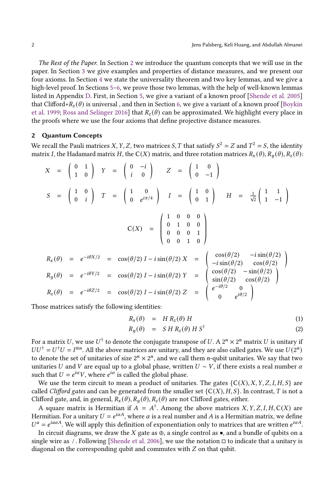
<figcaption class="paper-figure-caption"><b>Fig 1.</b> Low-resolution page preview, page 2</figcaption>
</figure>
<figure class="paper-figure-card">
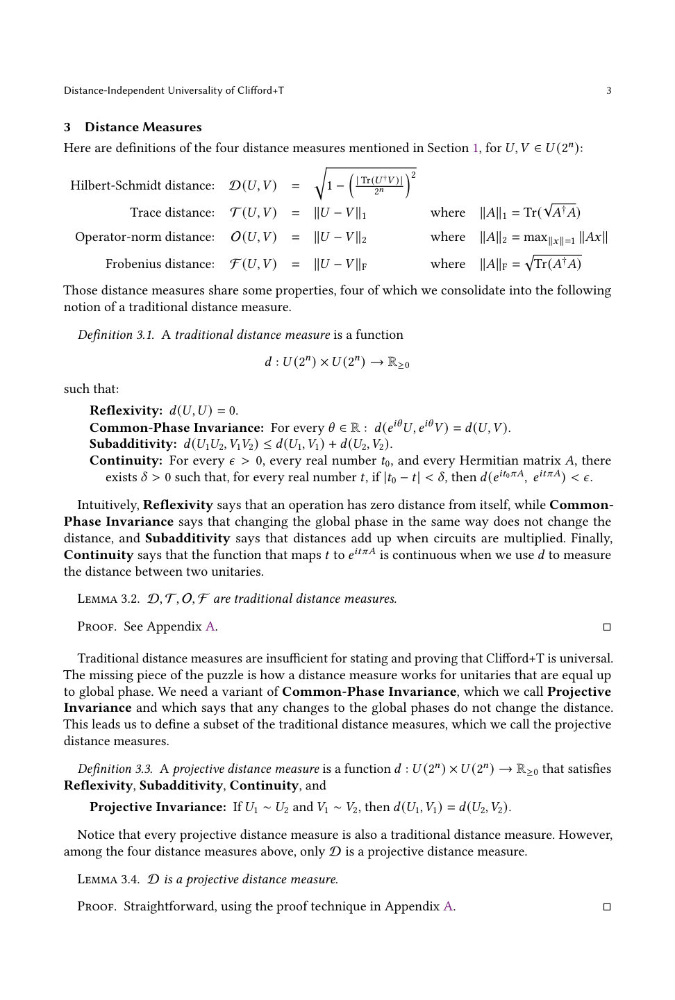
<figcaption class="paper-figure-caption"><b>Fig 2.</b> Low-resolution page preview, page 3</figcaption>
</figure>
<figure class="paper-figure-card">
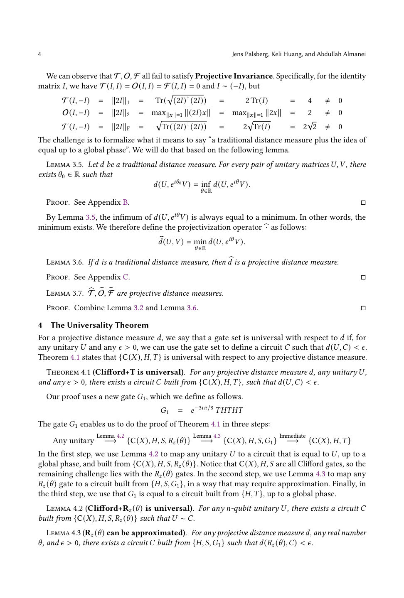
<figcaption class="paper-figure-caption"><b>Fig 3.</b> Low-resolution page preview, page 4</figcaption>
</figure>
<figure class="paper-figure-card">
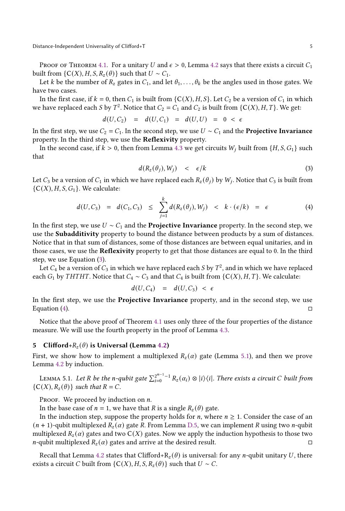
<figcaption class="paper-figure-caption"><b>Fig 4.</b> Low-resolution page preview, page 5</figcaption>
</figure>
<figure class="paper-figure-card">
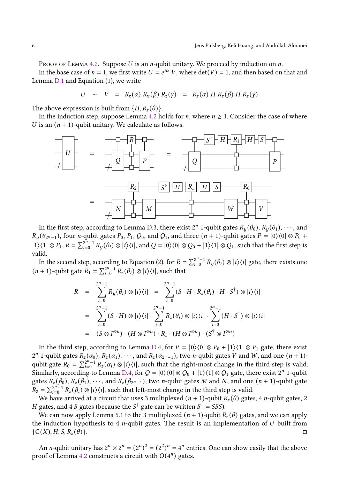
<figcaption class="paper-figure-caption"><b>Fig 5.</b> Low-resolution page preview, page 6</figcaption>
</figure>
</div>
<p><strong>Summary.</strong> This paper establishes a rigorous, distance-independent criterion for the universality of the Clifford+T gate set in quantum computing. By defining 'projective distance measures' based on four axioms, the authors prove that the gate set can approximate any unitary operation for any distance metric satisfying these properties. This provides a fundamental theoretical underpinning for quantum circuit synthesis.</p>
<p><strong>Why it may be interesting.</strong> It provides a rigorous, abstract mathematical framework for understanding when a small set of quantum gates is sufficient to simulate any quantum operation, independent of the specific metric used to measure error.</p>
<details>
<summary>Detailed structure</summary>
<p><strong>Main problem.</strong> To determine the necessary and sufficient properties of a distance measure required to prove the distance-independent universality of the Clifford+T gate set for quantum computation.</p>
<p><strong>Main result.</strong> The universality theorem holds for any distance measure satisfying the axioms of a 'projective distance measure,' formalizing the proof in Lean.</p>
<p><strong>Method.</strong> The authors define projective distance measures using four axioms and prove that the gate set $\{C(X), H, T\}$ is universal with respect to any such measure by decomposing the approximation into sequential steps.</p>
<p><strong>Model / system.</strong> The system is quantum computation, focusing on approximating any arbitrary unitary matrix $U \in U(2^n)$ using the Clifford+T gate set.</p>
<p><strong>Key observables.</strong> Distance measures (Hilbert-Schmidt, Trace, Operator-norm, Frobenius) and the approximation error $\epsilon$.</p>
<p><strong>Important parameters / regimes.</strong> The structure of the distance measure (e.g., satisfying Projective Invariance) and the gate set $\{C(X), H, T\}$.</p>
<p><strong>Assumptions / limitations.</strong> The necessary structure for universality is captured entirely by the definition of a projective distance measure.</p>
<p><strong>Paper structure.</strong> The paper first defines projective distance measures via four axioms. It then proves that the universality theorem holds for any such measure, relying on decomposing the approximation into steps involving $R_z(	heta)$ gates, which are subsequently shown to be approximable by circuits built from $\{H, S, G_1\}$.</p>
</details>
<details>
<summary>Abstract</summary>
<p>A well-known theorem states that the Clifford+T gate set is universal for quantum computing. The theorem combines approximation using a distance measure on unitary matrices with equality up to global phase. Previous proofs combine these two notions for specific distance measures, but do not identify the properties that govern how they work together. Which properties are sufficient to state and prove the theorem?   We answer this question by defining projective distance measures using four axioms. We prove that the universality theorem holds for every distance measure satisfying these axioms. Thus, our formulation of the theorem is independent of any particular choice of distance measure. We show that the Hilbert-Schmidt distance is already a projective distance measure. We also develop a general construction that transforms a large class of distance measures into projective distance measures and apply it to obtain projective versions of the operator-norm distance, the Frobenius distance, and the trace distance. Finally, we formalize the proof of the universality theorem in Lean.</p>
</details>
<p><sub><a href="#top">↑ back to top</a></sub></p>

<p><a id="paper-2610.03630"></a></p>
<h3 id="entanglement-of-purification-for-werner-states-canonical-purification-and-nonadditivity"><a href="http://arxiv.org/abs/2610.03630v1">Entanglement of purification for Werner states: canonical purification and nonadditivity</a></h3>
<p><strong>Authors:</strong> Zahra Baghali Khanian, Amir-Reza Negari<br>
<strong>Type:</strong> theory · <strong>Category:</strong> quantum information and computing · <strong>PDF:</strong> <a href="https://arxiv.org/pdf/2610.03630v1">https://arxiv.org/pdf/2610.03630v1</a><br>
<strong>Analysis basis:</strong> full PDF text, analyzed in chunks</p>
<div class="figure-strip-hint">↔ Scroll figures horizontally</div>
<div class="paper-figures-scroll">
<figure class="paper-figure-card">
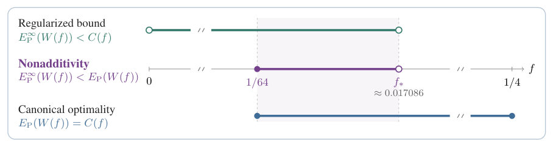
<figcaption class="paper-figure-caption"><b>Fig 1.</b> FIG. 1. Canonical optimality and nonadditivity for two-qubit Werner states. The green interval gives E∞ P (W(f)) &lt; C(f) for 0 &lt; f &lt; f∗(Proposition III.1), where C(f) denotes the entanglement entropy of the canonical purification of W(f) across the bipartition AA′ : BB′, equivalently the reflected entropy of W(f). The blue interval gives EP(W(f)) = C(f) for 1/64 ≤f ≤1/4 (Proposition IV.3). Their intersection, shown in purple, proves nonadditivity on [1/64, f∗). Filled endpoints are included and open endpoints excluded. The axis is broken on both sides to enlarge the overlap; unmarked intervals are not classified by these results.</figcaption>
</figure>
<figure class="paper-figure-card">
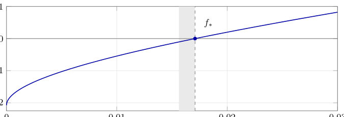
<figcaption class="paper-figure-caption"><b>Fig 2.</b> FIG. 2. The initial derivative (10) is negative for 0 &lt; f &lt; f∗, so a small positive mixing probability lowers the achievable rate below C(f). The value at f = 0 is the continuous limit. In the shaded interval [1/64, f∗), canonical purification is also optimal for one copy, establishing nonadditivity.</figcaption>
</figure>
</div>
<p><strong>Summary.</strong> This paper rigorously proves the nonadditivity of the entanglement of purification for Werner states in a specific parameter regime. It establishes that the canonical purification entanglement provides the exact single-copy entanglement, while the regularized entanglement falls strictly below it. This resolves the additivity question for $\alpha=1$ using only separable states.</p>
<p><strong>Why it may be interesting.</strong> The resolution of the additivity question for $\alpha=1$ using separable states provides a deep theoretical result about entanglement quantification that has implications for understanding resource theories in quantum information.</p>
<details>
<summary>Detailed structure</summary>
<p><strong>Main problem.</strong> The paper investigates the additivity property of the entanglement of purification ($ ext{EP}(
ho)$) for two-qubit Werner states, comparing it to canonical and regularized entanglement measures.</p>
<p><strong>Main result.</strong> It proves that the entanglement of purification is nonadditive for a specific range of Werner states ($1/64 \le f < f^*$), while simultaneously showing that the canonical purification entanglement is globally optimal in this regime.</p>
<p><strong>Method.</strong> The analysis employs rigorous mathematical techniques, including establishing lower bounds via projection onto symmetric subspaces, analyzing ensemble decompositions, and minimizing natural-log entropy subject to constraints.</p>
<p><strong>Model / system.</strong> The study focuses on two-qubit Werner states, $W(f)$, parameterized by the singlet weight $f$. The theoretical framework involves comparing various entanglement measures derived from quantum state purification.</p>
<p><strong>Key observables.</strong> Entanglement of purification ($    ext{EP}(
ho)$), canonical purification entanglement ($ ext{SR}(A:B)
ho$), and regularized entanglement of purification ($  ext{E}_\infty^P(
ho)$).</p>
<p><strong>Important parameters / regimes.</strong> The singlet weight $f$, and a critical threshold $f^* \approx 0.017$.</p>
<p><strong>Assumptions / limitations.</strong> The analysis generalizes proofs from classical two-qubit states and relies on establishing bounds through entropy minimization techniques.</p>
<p><strong>Figures summary.</strong> Figure 1 illustrates the relationship between the three entanglement bounds ($ ext{E}_\infty^P$, $ ext{EP}$, $C(f)$) across the parameter $f$, visually confirming the nonadditivity region on $[1/64, f^*)$.</p>
<p><strong>Paper structure.</strong> The paper proceeds by defining the entanglement measures, proving canonical optimality for the single-copy entanglement, and then using ensemble decomposition and entropy minimization techniques to establish the strict inequality $    ext{E}_\infty^P(W(f)) &lt; C(f)$ for small $f$.</p>
</details>
<details>
<summary>Abstract</summary>
<p>We prove that the von Neumann entanglement of purification is nonadditive. For two-qubit Werner states $W(f)$ with singlet weight $1/64\le f\le1/4$, we show that canonical purification is globally optimal: its entanglement, also known as reflected entropy, gives the exact entanglement of purification. In contrast, the regularized entanglement of purification lies strictly below the reflected entropy for $0<f<f_\ast$, where $f_\ast\approx0.017$. Together, these results establish nonadditivity throughout $1/64\le f<f_\ast$. Our canonical-optimality proof generalizes the proof in [1], which established Rényi nonadditivity for $0\leα<1$ using classical two-qubit states. We thus resolve the additivity question at $α=1$. Remarkably, nonadditivity is again witnessed by separable states and no entanglement in the underlying states is required.</p>
</details>
<p><sub><a href="#top">↑ back to top</a></sub></p>

<p><a id="paper-2610.02309"></a></p>
<h3 id="entanglement-requires-fluctuations-at-conformal-interfaces"><a href="http://arxiv.org/abs/2610.02309v1">Entanglement Requires Fluctuations at Conformal Interfaces</a></h3>
<p><strong>Authors:</strong> Yuya Kusuki, Kosei Suzuyama, Yin Tang<br>
<strong>Type:</strong> theory · <strong>Category:</strong> statistical mechanics · <strong>PDF:</strong> <a href="https://arxiv.org/pdf/2610.02309v1">https://arxiv.org/pdf/2610.02309v1</a><br>
<strong>Analysis basis:</strong> full PDF text, analyzed in chunks</p>
<div class="figure-strip-hint">↔ Scroll figures horizontally</div>
<div class="paper-figures-scroll">
<figure class="paper-figure-card">
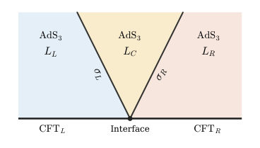
<figcaption class="paper-figure-caption"><b>Fig 1.</b> FIG. 2. Schematic constant-time slice of the double-brane geometry. The branes of tensions σL, σR separate AdS3 regions of radii LL, LC, LR and end on the same interface between the two boundary CFTs.</figcaption>
</figure>
<figure class="paper-figure-card">
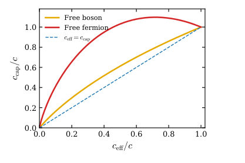
<figcaption class="paper-figure-caption"><b>Fig 2.</b> FIG. 1. The exact free-boson and free-fermion interface co- efficients satisfy ceff ≤ccap and follow distinct curves. The fermionic capacity can exceed its transparent value ccap/c = 1, whereas ceff/c ≤1.</figcaption>
</figure>
<figure class="paper-figure-card">
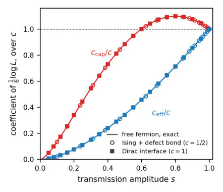
<figcaption class="paper-figure-caption"><b>Fig 3.</b> FIG. 3. Lattice coefficients (symbols), divided by the bulk central charge, for the critical Ising chain with a defect bond of strength λ (open circles, s = 2λ/(1 + λ2)) and for the Dirac fermion chain with an exactly conformal interface (filled squares, s = t). Solid lines are the exact free-fermion coef- ficients of Fig. 1. Both lattice models follow the fermionic curves.</figcaption>
</figure>
<figure class="paper-figure-card">
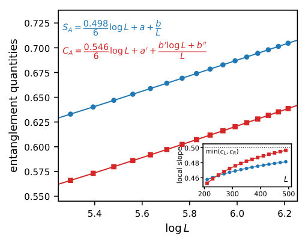
<figcaption class="paper-figure-caption"><b>Fig 4.</b> FIG. 4. Entropy (circles) and capacity (squares) across the W3 interface between the TCI and Ising CFTs, for 200 ≤L ≤500. Solid lines show the reference fit with the forms given, where b/L and (b′ log L+b′′)/L are the leading finite-size corrections. Inset: local slopes 6 dSA/d log L (circles) and 6 dCA/d log L (squares). The capacity slope overtakes the entropy slope at L ≃240, and both are still increasing at the largest sizes; the dotted line marks min(cL, cR) = 1/2.</figcaption>
</figure>
</div>
<p><strong>Summary.</strong> This work establishes a theoretical bound relating the universal logarithmic coefficient of entanglement capacity ($c_{cap}$) to that of entanglement entropy ($c_{eff}$) at conformal interfaces. By proving this bound in several physical contexts, including free CFTs and holographic models, the authors demonstrate that capacity provides a distinct, measurable diagnostic tool for characterizing quantum correlations across boundaries.</p>
<p><strong>Why it may be interesting.</strong> The connection between entanglement measures like entropy and capacity is fundamental to understanding quantum correlations across boundaries, which has implications for quantum information flow and boundary physics in condensed matter systems.</p>
<details>
<summary>Detailed structure</summary>
<p><strong>Main problem.</strong> The paper investigates the relationship between entanglement entropy ($S_A$) and the capacity of entanglement ($C_A$) at quantum interfaces, specifically testing the conjecture that $c_{eff} \le c_{cap}$.</p>
<p><strong>Main result.</strong> The conjectured bound $c_{eff} \le c_{cap}$ is proven in free CFTs and holographic models, and numerical calculations confirm that capacity provides independent data distinct from entropy.</p>
<p><strong>Method.</strong> The authors employ theoretical proofs using defect perturbation theory, replica trick calculations, and analyzing scaling laws derived from DMRG simulations on lattice models.</p>
<p><strong>Model / system.</strong> The study focuses on 2D Conformal Field Theories (CFTs) connected by various interfaces, including free boson/fermion CFTs, holographic interface branes, and interacting systems like the tricritical Ising/Ising interface.</p>
<p><strong>Key observables.</strong> Entanglement Entropy ($S_A$) and Capacity of Entanglement ($C_A$), characterized by their universal logarithmic coefficients ($c_{eff}$ and $c_{cap}$).</p>
<p><strong>Important parameters / regimes.</strong> The interface coupling strengths, the size of the system ($L$), and the central charges of the constituent CFTs.</p>
<p><strong>Assumptions / limitations.</strong> The analysis relies on the applicability of CFT techniques, the use of replica geometry, and the validity of the holographic correspondence in certain limits.</p>
<p><strong>Figures summary.</strong> Figures compare lattice coefficients ($c_{eff}/c$ and $c_{cap}/c$) against exact free-fermion curves, and show how capacity slopes can overtake entropy slopes at interfaces.</p>
<p><strong>Paper structure.</strong> The paper progresses from establishing the conjecture in free field theories and holography, to providing rigorous proofs using defect perturbation theory, and finally validating the results through extensive numerical calculations on complex interacting lattice models.</p>
</details>
<details>
<summary>Abstract</summary>
<p>We conjecture that the universal logarithmic coefficient for capacity of entanglement $c_{\mathrm{cap}}$ is bounded below by the corresponding entropy coefficient $c_{\mathrm{eff}}$ at conformal interfaces. We prove the bound in free boson and fermion CFTs and in holographic models with interface branes, and establish it using defect perturbation theory. Numerical calculations at interacting interfaces between the tricritical Ising and Ising CFTs further support the bound. Despite this constraint, capacity provides independent interface data. We construct interfaces with identical entropy and energy transmission coefficients but different capacity coefficients, and show that capacity can even increase as entropy decreases.</p>
</details>
<p><sub><a href="#top">↑ back to top</a></sub></p>

<p><a id="paper-2610.03220"></a></p>
<h3 id="evolving-hybrid-quantum-classical-architectures-for-image-classification"><a href="http://arxiv.org/abs/2610.03220v1">Evolving Hybrid Quantum-Classical Architectures for Image Classification</a></h3>
<p><strong>Authors:</strong> Devroop Kar, Daniel Krutz, Travis Desell<br>
<strong>Type:</strong> theory · <strong>Category:</strong> quantum information and computing · <strong>PDF:</strong> <a href="https://arxiv.org/pdf/2610.03220v1">https://arxiv.org/pdf/2610.03220v1</a><br>
<strong>Analysis basis:</strong> full PDF text, analyzed in chunks</p>
<div class="figure-strip-hint">↔ Scroll figures horizontally</div>
<div class="paper-figures-scroll">
<figure class="paper-figure-card">
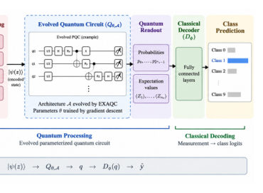
<figcaption class="paper-figure-caption"><b>Fig 1.</b> Figure 1: Overview of the proposed EXAQC hybrid quantum classical architecture. A CNN encoder compresses the input image into a lower-dimensional representation that is encoded and processed by an evolved PQC. Quantum measurements are subsequently mapped to class predictions by a classical decoder.</figcaption>
</figure>
<figure class="paper-figure-card">

<figcaption class="paper-figure-caption"><b>Fig 2.</b> Fig. 2 demonstrates how evolution modifies the architecture A while gradient-based learning op- timizes the continuous model parameters. Structural mutation can add, enable, disable, or reorder</figcaption>
</figure>
<figure class="paper-figure-card">
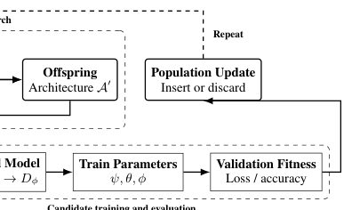
<figcaption class="paper-figure-caption"><b>Fig 3.</b> Figure 2: EXAQC evolutionary search workflow for hybrid image classification. Parent circuit genomes are selected and modified through mutation or crossover to create offspring architectures. Each offspring is instantiated within the hybrid model and its classical and quantum parameters are optimized using gradient-based training. Validation performance determines whether the offspring is inserted into the steady-state population.</figcaption>
</figure>
<figure class="paper-figure-card">
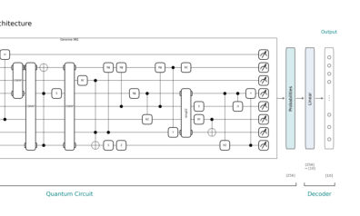
<figcaption class="paper-figure-caption"><b>Fig 4.</b> Figure 3: Evolved EXAQC hybrid architecture for CIFAR-10. A three-block CNN encoder com- presses each image to 8 features, which are RY-encoded onto 8 qubits.</figcaption>
</figure>
<figure class="paper-figure-card">
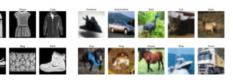
<figcaption class="paper-figure-caption"><b>Fig 5.</b> Figure 4: Representative samples from the three image-classification benchmarks considered in this work. Each panel contains one example from each of the ten classes. MNIST and Fashion-MNIST consist of 28 × 28 grayscale images, whereas CIFAR-10 consists of 32 × 32 RGB images.</figcaption>
</figure>
</div>
<p><strong>Summary.</strong> This paper introduces EXAQC, an evolutionary framework designed to automatically discover optimal quantum circuit architectures for image classification. By treating the quantum circuit structure as an evolving genome, the method creates compact quantum modules that integrate into classical deep learning pipelines. The results show these evolved hybrid models achieve high accuracy while using significantly fewer parameters than traditional classical networks.</p>
<p><strong>Why it may be interesting.</strong> The work directly addresses the practical implementation challenge of quantum machine learning by automating the circuit design process, which is crucial for realizing quantum advantage in complex tasks like image recognition.</p>
<details>
<summary>Detailed structure</summary>
<p><strong>Main problem.</strong> The primary challenge is developing effective hybrid quantum-classical neural networks for image classification, overcoming the limitation of relying on manually designed, fixed quantum circuit architectures.</p>
<p><strong>Main result.</strong> The proposed evolutionary framework (EXAQC) successfully discovers compact quantum modules that maintain competitive accuracy while drastically reducing the number of trainable parameters compared to large classical counterparts.</p>
<p><strong>Method.</strong> The authors extend an evolutionary framework to automatically search for optimal Parameterized Quantum Circuits (PQCs) that act as intermediate processing modules within a hybrid quantum-classical pipeline.</p>
<p><strong>Model / system.</strong> The model is a hybrid quantum-classical architecture: $E_\psi 
ightarrow Q_{	heta,A} 
ightarrow D_\phi$. It uses a classical encoder ($E$) to map images to quantum features, an evolved PQC ($Q$) to process these features, and a classical decoder ($D$) for final classification.</p>
<p><strong>Key observables.</strong> Test accuracy on MNIST, Fashion-MNIST, and CIFAR-10; trainable parameter count; gate count; and parameter reduction ratio compared to classical CNNs.</p>
<p><strong>Important parameters / regimes.</strong> The quantum circuit parameters ($   heta$) and the structure/architecture ($A$) are the primary variables optimized via evolutionary search and gradient descent.</p>
<p><strong>Assumptions / limitations.</strong> The performance comparison assumes that the evolved quantum module can effectively replace larger classical components while maintaining accuracy, and that rotation-based encodings outperform amplitude encoding for these tasks.</p>
<p><strong>Figures summary.</strong> Figures illustrate the overall EXAQC hybrid architecture, the detailed workflow of the evolutionary search process, and specific evolved circuit diagrams for MNIST and Fashion-MNIST.</p>
<p><strong>Paper structure.</strong> The paper details the hybrid model formulation, introduces the EXAQC evolutionary search mechanism (including mutation and crossover operators), analyzes the parameter budgets and readout strategies, and presents empirical results comparing performance and parameter efficiency across multiple datasets.</p>
</details>
<details>
<summary>Abstract</summary>
<p>Hybrid quantum classical neural networks integrate parameterized quantum circuits (PQCs) with established deep learning architectures, but their performance depends strongly on the choice of quantum circuit architecture, a choice that remains largely manual. Most existing approaches rely on hand-designed or fixed circuit ansätze, requiring circuit structure, gate composition, and qubit connectivity to be specified in advance with no guarantee that they suit the task. This limitation is especially acute in image classification, where quantum circuits must transform features extracted by classical networks while remaining compact enough for practical training, requirements that generic, task-agnostic ansätze are unlikely to satisfy simultaneously. We extend EXAQC, an evolutionary framework for automated quantum circuit discovery, to image classification. EXAQC evolves PQCs as intermediate processing modules while retaining classical feature-extraction and prediction layers. On MNIST, Fashion-MNIST, and CIFAR-10, EXAQC achieves 98.42%, 90.62%, and 85.47% accuracy, respectively, while using comparable gate counts to other quantum architecture-search methods. Against classical networks, evolved hybrid models maintain comparable accuracy with substantially fewer trainable parameters, reaching 85.68% on CIFAR-10 with over 25$\times$ fewer parameters than a 10-layer CNN. Encoding choice also matters: rotation-based encodings (RX, RY, U3) outperform amplitude encoding by 22-25 points on CIFAR-10. These results demonstrate that automated circuit discovery yields compact quantum modules that can replace larger classical components in vision architectures while retaining competitive accuracy.</p>
</details>
<p><sub><a href="#top">↑ back to top</a></sub></p>

<p><a id="paper-2610.03677"></a></p>
<h3 id="exact-recovery-for-non-abelian-surface-codes"><a href="http://arxiv.org/abs/2610.03677v1">Exact Recovery for Non-Abelian Surface Codes</a></h3>
<p><strong>Authors:</strong> Alison Warman, Nathanan Tantivasadakarn, Sakura Schafer-Nameki<br>
<strong>Type:</strong> theory · <strong>Category:</strong> quantum information and computing · <strong>PDF:</strong> <a href="https://arxiv.org/pdf/2610.03677v1">https://arxiv.org/pdf/2610.03677v1</a><br>
<strong>Analysis basis:</strong> full PDF text, analyzed in chunks</p>
<div class="figure-strip-hint">↔ Scroll figures horizontally</div>
<div class="paper-figures-scroll">
<figure class="paper-figure-card">
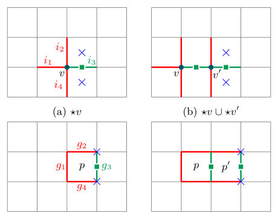
<figcaption class="paper-figure-caption"><b>Fig 1.</b> Figure 1. Errors are shown in red, gauge-fixed edges are shown in green and the single-error checks are shown in blue. We gauge-fix the right edge of each vertex star to have h3 = id and the right edge of each plaquette to have µ3 = 1.</figcaption>
</figure>
<figure class="paper-figure-card">
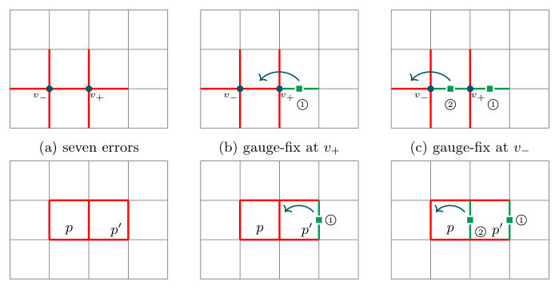
<figcaption class="paper-figure-caption"><b>Fig 2.</b> Figure 2. The gauge-fixing protocol, with the conventions of Fig. 1. Errors are shown in red, gauge-fixed edges are green and the numbers give the order in which their gauge-fixed labels are set, proceeding along each row from right to left. Top row: (a) errors on the seven edges of ⋆v−∪⋆v+. (b) The stabilizer Ah−1 v+ sets the multiplication label of the right edge of v+ to id, and</figcaption>
</figure>
<figure class="paper-figure-card">
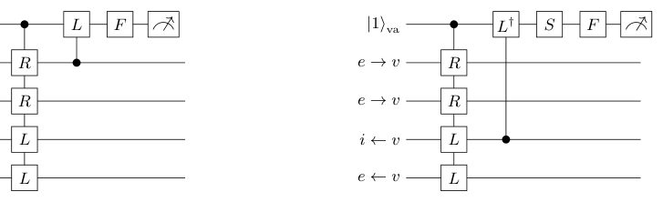
<figcaption class="paper-figure-caption"><b>Fig 3.</b> Figure 3. The circuit (3.14) for the charge transfer at a vertex v of the square lattice, with the irrep error Eµ i for an edge i entering v (left) and for an edge i exiting v (right). A dot on a control qudit in the group basis state |x⟩, connected to boxes L or R, applies Lx or Rx to the target qudits, as in (3.4). The first gate is the controlled vertex operator Uv of (3.3), with the ancilla as control, and the second is CLi,va or CL† i,va (depending on the orientation of i), with i as control. Afterwards the data qudits are in |ψ⟩and the ancilla is in |Γab⟩, which the Fourier transform F maps to the group basis state |Γ, a, b⟩before the measurement in the group basis.</figcaption>
</figure>
<figure class="paper-figure-card">
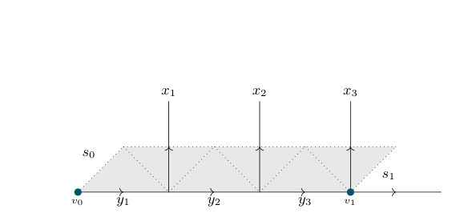
<figcaption class="paper-figure-caption"><b>Fig 4.</b> Figure 5. Rbbon operators: the figure shows an open ribbon ξ with n = 3 stretching from s0 = (v0, p0) to s1 = (v1, p1). Its dual path crosses the upward edges x1, . . . , xn and its direct path γ follows the rightward edges y1, . . . , yn. These 2n edges form supp ξ. The end vertices are v0 and v1 and every check away from them commutes with the ribbon algebra.</figcaption>
</figure>
</div>
<p><strong>Summary.</strong> This paper provides a comprehensive, deterministic quantum error correction protocol for non-Abelian topological surface codes defined by the quantum double D(G). It constructs a complete error basis and details a systematic recovery mechanism using charge and flux transfer circuits. This work is significant because it moves beyond merely proving the existence of such a code to providing the explicit, implementable circuit for fault tolerance in complex quantum systems.</p>
<p><strong>Why it may be interesting.</strong> The explicit construction of a deterministic recovery circuit for non-Abelian codes is a major theoretical advance, providing concrete tools for fault-tolerant quantum computation beyond simple Pauli noise models.</p>
<details>
<summary>Detailed structure</summary>
<p><strong>Main problem.</strong> The paper addresses the challenge of developing an exact and deterministic quantum error correction (QEC) protocol for non-Abelian topological surface codes.</p>
<p><strong>Main result.</strong> They construct a complete and orthogonal error basis and detail a deterministic recovery protocol involving charge and flux transfer circuits applicable to any finite group G.</p>
<p><strong>Method.</strong> The methodology involves generalizing the Pauli error basis using group multiplication and irreducible representation operators, followed by introducing a gauge-fixing procedure to ensure orthogonality and completeness.</p>
<p><strong>Model / system.</strong> The system is a non-Abelian topological surface code based on the quantum double D(G) of a finite group G. The Hamiltonian is defined by vertex and plaquette operators, and the code space is the $+1$ eigenspace of this Hamiltonian.</p>
<p><strong>Key observables.</strong> Error detection is diagnosed via plaquette violations (flux) and vertex violations (charge), which are measured using generalized operators.</p>
<p><strong>Important parameters / regimes.</strong> The protocol is applicable for any finite group G, including non-Abelian groups.</p>
<p><strong>Assumptions / limitations.</strong> The protocol assumes the input errors are predetermined, neutral, and correctable clusters, leaving the optimal syndrome extraction/decoder construction for future work.</p>
<p><strong>Figures summary.</strong> Figure 5 illustrates the structure of a ribbon ($\xi$) with $n=3$, detailing its support edges and end vertices, which is central to the error analysis.</p>
<p><strong>Paper structure.</strong> The paper builds from establishing the error basis for D(G) (including irrep operators) to analyzing local error detection (flux/charge checks) and culminates in a detailed, systematic protocol for recovering errors supported on extended structures called 'ribbons.'</p>
</details>
<details>
<summary>Abstract</summary>
<p>We study exact recovery for non-Abelian topological surface codes based on the quantum double $D(G)$ of any finite group $G$. We determine an orthogonal error basis, that is comprised of group multiplication and irreducible representation operators. Whenever the errors are supported on closed loops on the lattice or dual lattice, there is a redundancy in the basis, due to stabilizers. To remedy this, we introduce a gauge-fixing that results in a complete and orthogonal error basis on the code space. Assuming as input predetermined, neutral correctable error clusters, we construct charge and flux transfer circuits that move the errors onto ancillas that then get projected out. This is an exact and deterministic recovery protocol, applicable to surface codes for any finite, in particular non-Abelian, group $G$.</p>
</details>
<p><sub><a href="#top">↑ back to top</a></sub></p>

<p><a id="paper-2610.03699"></a></p>
<h3 id="exponential-lower-bounds-on-the-fermionic-gaussian-rank-of-magic-states-and-the-bosonic-coherent-state-rank-of-fock-states"><a href="http://arxiv.org/abs/2610.03699v1">Exponential lower bounds on the fermionic Gaussian rank of magic states and the bosonic coherent state rank of Fock states</a></h3>
<p><strong>Authors:</strong> Oliver Reardon-Smith<br>
<strong>Type:</strong> theory · <strong>Category:</strong> quantum information and computing · <strong>PDF:</strong> <a href="https://arxiv.org/pdf/2610.03699v1">https://arxiv.org/pdf/2610.03699v1</a><br>
<strong>Analysis basis:</strong> full PDF text, analyzed in chunks</p>
<div class="figure-strip-hint">↔ Scroll figures horizontally</div>
<div class="paper-figures-scroll">
<figure class="paper-figure-card">
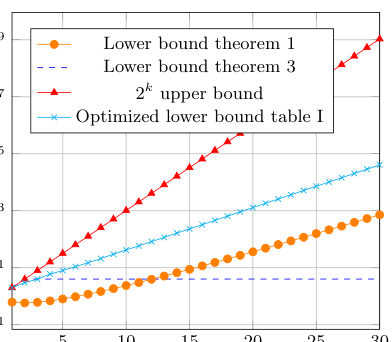
<figcaption class="paper-figure-caption"><b>Fig 1.</b> FIG. 1. A summary of our results and the now known bounds on the exact fermionic Gaussian rank of the state |M⟩⊗k. The trivial upper bound and the lower bound from theorem 1 apply to and are plotted from k = 1, whereas the bound from theorem 3 applies only to k ≥2. We improve on the prior state of the art knowledge for every k &gt; 1, since the rank for k = 1 is trivially 2. The “optimized” lower bound corresponds to directly evaluating the matrix ranks on the right hand side of equation (34). The script producing the data is available at Ref. [26] and the exact numbers are in table I.</figcaption>
</figure>
<figure class="paper-figure-card">
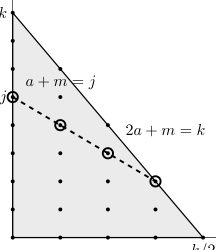
<figcaption class="paper-figure-caption"><b>Fig 2.</b> FIG. 2. Intuition behind the relabelling showing the equiv- alence of equations (50) and (51). We switch from summing over m and a to summing over lines of points parallel to the dashed line, and points within those lines.</figcaption>
</figure>
</div>
<p><strong>Summary.</strong> This paper derives exponential lower bounds on the fermionic Gaussian rank of magic states and provides an exact formula for the coherent state border rank of bosonic Fock states. By quantifying the minimum number of terms needed for state decompositions, the work establishes fundamental limitations on classical simulation algorithms for quantum systems. These results are highly relevant to quantum information theory and complexity theory.</p>
<p><strong>Why it may be interesting.</strong> The results provide concrete, exponentially growing lower bounds on the resources needed for classical simulation, directly impacting the complexity theory of quantum computation and resource theories.</p>
<details>
<summary>Detailed structure</summary>
<p><strong>Main problem.</strong> The paper addresses the difficulty of classically simulating quantum mechanics by determining the minimum 'rank' required to decompose large tensor products of specific quantum states.</p>
<p><strong>Main result.</strong> It establishes an exponential lower bound, $\Omega(1.4^k)$, for the fermionic Gaussian rank of magic states and provides an exact formula for the coherent state border rank of bosonic Fock states.</p>
<p><strong>Method.</strong> The authors use techniques involving matrix rank analysis, subadditivity arguments, and analyzing the decomposition of states into superpositions of 'free' states (Gaussian or coherent).</p>
<p><strong>Model / system.</strong> The work analyzes two primary systems: fermionic systems using 'magic states' and fermionic Gaussian decompositions, and bosonic systems involving $n$-mode Fock states and coherent states.</p>
<p><strong>Key observables.</strong> The primary observable is the 'rank' ($r$), which quantifies the minimum number of terms needed for a state decomposition. Other key observables include the $\delta$-approximate rank and the bosonic coherent state border rank.</p>
<p><strong>Important parameters / regimes.</strong> The key parameters are $k$, the number of tensor factors; $\delta$, the approximation tolerance; and $m_j$, the number of bosons in mode $j$.</p>
<p><strong>Assumptions / limitations.</strong> The analysis relies on the structure of Gaussian states and the ability to relate the rank to the rank of associated matrices derived from the state's representation.</p>
<p><strong>Figures summary.</strong> Figure 1 summarizes the derived lower bounds for the exact fermionic Gaussian rank of $|M
angle^{\otimes k}$ compared to known upper bounds. Table I provides quantitative data for small $k$ comparing different rank bounds.</p>
<p><strong>Paper structure.</strong> The paper first tackles the fermionic Gaussian rank, proving a strong lower bound for $|M
angle^{\otimes k}$. It then addresses the $\delta$-approximate rank for the same state. Finally, it analyzes the bosonic case, deriving an exact formula for the coherent state border rank of Fock states and providing robust bounds for the approximate rank.</p>
</details>
<details>
<summary>Abstract</summary>
<p>Recent algorithms for classical simulation of quantum mechanics have runtime whose superpolynomial component is given by a linear dependence on the number of terms required to write large tensor products of certain "magic" states as superpositions of "free" states (which may be stabilizer states, fermionic Gaussian states or others). Surprisingly little is known about the number of terms in such decompositions, called ranks (e.g. the stabilizer rank, fermionic-Gaussian rank etc.). For complexity theoretic reasons they are expected to grow exponentially in the number of tensor factors but, while exponential upper bounds are known for both the stabilizer and fermionic-Gaussian rank of magic states; the best known lower bounds on the stabiliser rank are quadratic, and no bounds on the fermionic-Gaussian rank are known beyond fixed constants. In this work we prove that any fermionic Gaussian decomposition of $\lvert M\rangle^{\otimes k}$ consists of $Ω(1.4^k)$ terms. Here $\lvert M\rangle$ is the most standard magic state for fermionic linear optics: the $4$ qubit state that may be consumed to implement a swap gate. We also prove essentially matching bounds on the $δ$-approximate rank of the same state, lower bounding it by the same quantity that bounds the exact rank, multiplied by a factor of $1-δ^2$. Our results on exact fermionic Gaussian rank apply directly to any product of $k$ fixed parity non-Gaussian states, although the same is not true of the approximate rank. Finally, we prove that the coherent state border rank of an $n$-mode bosonic Fock state with $m_j$ bosons in mode $j$ is exactly $\prod_{j}(1+m_j)$, answering a conjecture of Ref. [1] and obtain lower bounds on the approximate coherent state rank given by the same quantity multiplied by a function of the fidelity of the approximation, emphasizing the broad applicability of the method we employ.</p>
</details>
<p><sub><a href="#top">↑ back to top</a></sub></p>

<p><a id="paper-2610.03645"></a></p>
<h3 id="exponential-quantum-space-advantage-in-random-data-streams"><a href="http://arxiv.org/abs/2610.03645v1">Exponential quantum space advantage in random data streams</a></h3>
<p><strong>Authors:</strong> Adam Bouland, Matthew Ding, Siddhartha Jain<br>
<strong>Type:</strong> theory · <strong>Category:</strong> quantum information and computing · <strong>PDF:</strong> <a href="https://arxiv.org/pdf/2610.03645v1">https://arxiv.org/pdf/2610.03645v1</a><br>
<strong>Analysis basis:</strong> full PDF text, analyzed in chunks</p>
<div class="figure-strip-hint">↔ Scroll figures horizontally</div>
<div class="paper-figures-scroll">
<figure class="paper-figure-card">
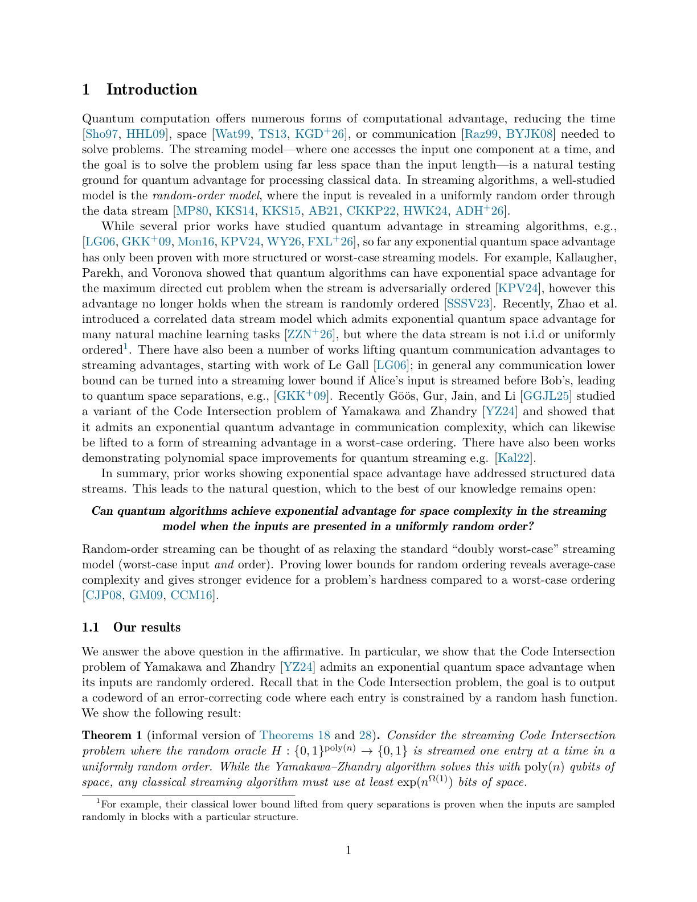
<figcaption class="paper-figure-caption"><b>Fig 1.</b> Low-resolution page preview, page 2</figcaption>
</figure>
<figure class="paper-figure-card">
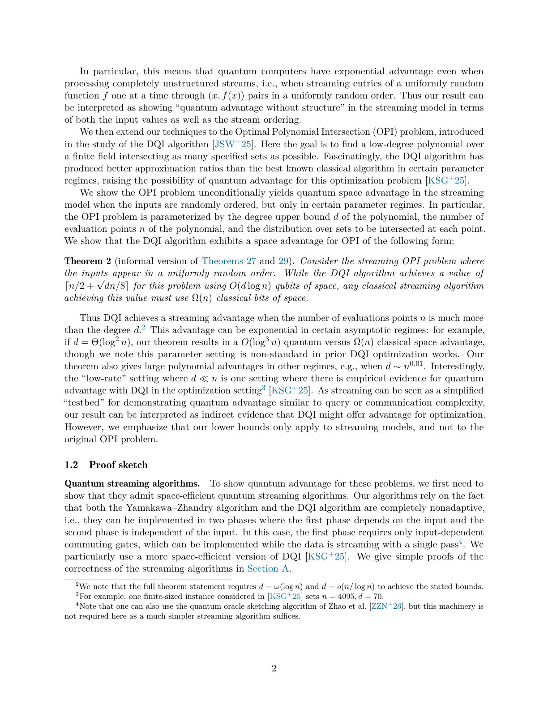
<figcaption class="paper-figure-caption"><b>Fig 2.</b> Low-resolution page preview, page 3</figcaption>
</figure>
<figure class="paper-figure-card">
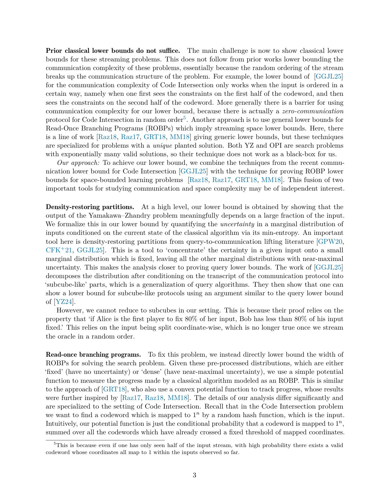
<figcaption class="paper-figure-caption"><b>Fig 3.</b> Low-resolution page preview, page 4</figcaption>
</figure>
<figure class="paper-figure-card">
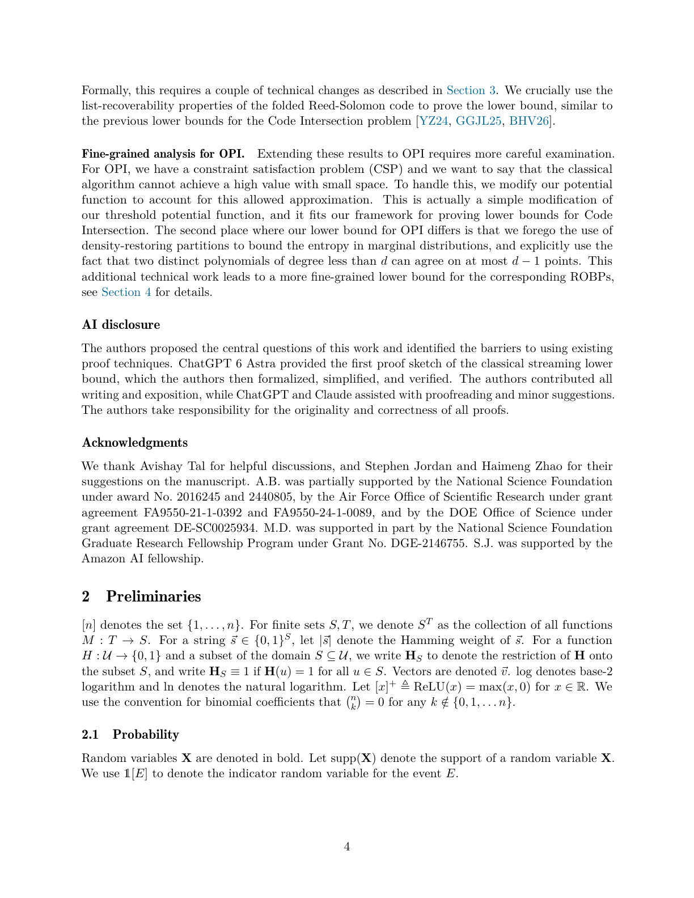
<figcaption class="paper-figure-caption"><b>Fig 4.</b> Low-resolution page preview, page 5</figcaption>
</figure>
<figure class="paper-figure-card">
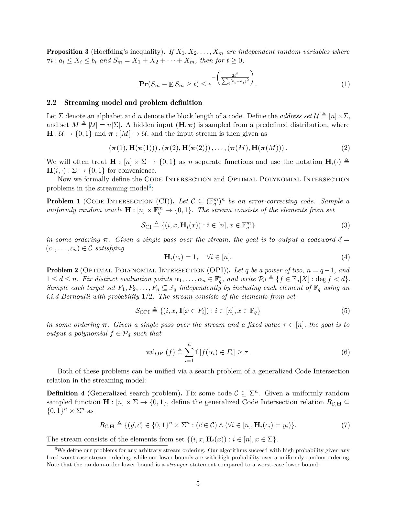
<figcaption class="paper-figure-caption"><b>Fig 5.</b> Low-resolution page preview, page 6</figcaption>
</figure>
</div>
<p><strong>Summary.</strong> This paper rigorously proves that quantum computers possess an exponential space advantage over classical computers when solving specific problems like Code Intersection and Optimal Polynomial Intersection in a random-order streaming setting. It achieves this by developing sophisticated lower bounds using information-theoretic tools and constructing highly efficient, one-pass quantum streaming algorithms.</p>
<p><strong>Why it may be interesting.</strong> While focused on complexity theory, the techniques used—such as analyzing information flow under random permutations and achieving exponential separation between classical and quantum memory requirements—are fundamental to understanding the limits of quantum computation in data processing tasks.</p>
<details>
<summary>Detailed structure</summary>
<p><strong>Main problem.</strong> The paper establishes unconditional quantum space advantages for solving specific computational problems, namely Code Intersection and Optimal Polynomial Intersection, when the input data is streamed in a uniformly random order.</p>
<p><strong>Main result.</strong> It proves an exponential quantum space advantage for the Code Intersection problem and a provable advantage for the OPI problem, showing quantum memory requirements scale polynomially with parameters while classical requirements scale linearly with the number of samples.</p>
<p><strong>Method.</strong> The authors combine advanced techniques from communication complexity lower bounds (using density-restoring partitions and potential functions) with quantum algorithm design (like streaming DQI) to establish these bounds and construct the quantum protocols.</p>
<p><strong>Model / system.</strong> The core model is the random-order streaming model, where input data is revealed sequentially in a uniformly random permutation. The problems analyzed are Code Intersection (Yamakawa–Zhandry) and Optimal Polynomial Intersection (OPI).</p>
<p><strong>Key observables.</strong> Space complexity (qubits vs. classical bits), success probability of the quantum algorithms, and the required memory size for classical streaming algorithms.</p>
<p><strong>Important parameters / regimes.</strong> Degree $d$, number of evaluation points $n$, and the streaming order (random vs. worst-case). The advantage is highlighted in the 'low-rate' regime where $n \gg d$.</p>
<p><strong>Assumptions / limitations.</strong> The lower bounds are derived under the assumption of a uniformly random streaming order, which is a stronger condition than worst-case analysis. The quantum algorithms are shown to work for all stream orderings.</p>
<p><strong>Paper structure.</strong> The paper first establishes the quantum advantage for Code Intersection using density-restoring partitions and potential functions. It then extends this framework to the OPI problem, deriving a specific lower bound using polynomial properties, and finally presents the one-pass quantum streaming algorithms (YZ and DQI) that achieve the required low space complexity.</p>
</details>
<details>
<summary>Abstract</summary>
<p>We show two unconditional quantum space advantages in the random-order streaming model. First, we show the Yamakawa--Zhandry Code Intersection problem admits exponential quantum advantage in the streaming model when its inputs are streamed in random order. This means quantum computers exhibit exponential space advantage even when simply receiving $(x,f(x))$ pairs for a uniformly random function $f$ in a uniformly random order. Our lower bound is shown using density-restoring partitions as in the work of Göös, Gur, Jain, and Li (STOC 2025) combined with a convex potential, similar to the work of Raz (J.ACM 2018) on parity learning and its generalization by Garg, Raz, and Tal (STOC 2018).   Second, we use our framework to show quantum space advantage for the Optimal Polynomial Intersection (OPI) problem in certain regimes via a streaming version of the Decoded Quantum Interferometry algorithm (Nature 2025; arXiv:2510.10967). In particular, we show that for degree $d$ and $n$ evaluation points, attaining $1/2 + Ω(\sqrt{d/n})$ fraction of satisfied OPI constraints via streaming requires $Ω(n)$ classical bits of memory but only $O(d\log n)$ qubits. This yields provable quantum advantage in a "low-rate" regime when the number of evaluation points is much larger than the degree, with a space advantage that can be as large as exponential in certain parameter settings.</p>
</details>
<p><sub><a href="#top">↑ back to top</a></sub></p>

<p><a id="paper-2610.03429"></a></p>
<h3 id="fault-tolerance-of-quantum-circuits-with-tensor-networks-and-symplectic-geometry"><a href="http://arxiv.org/abs/2610.03429v1">Fault tolerance of quantum circuits with tensor networks and symplectic geometry</a></h3>
<p><strong>Authors:</strong> Soham Ghosh, Holger Boche, Andrew Tanggara<br>
<strong>Type:</strong> theory · <strong>Category:</strong> quantum information and computing · <strong>PDF:</strong> <a href="https://arxiv.org/pdf/2610.03429v1">https://arxiv.org/pdf/2610.03429v1</a><br>
<strong>Analysis basis:</strong> full PDF text, analyzed in chunks</p>
<div class="figure-strip-hint">↔ Scroll figures horizontally</div>
<div class="paper-figures-scroll">
<figure class="paper-figure-card">
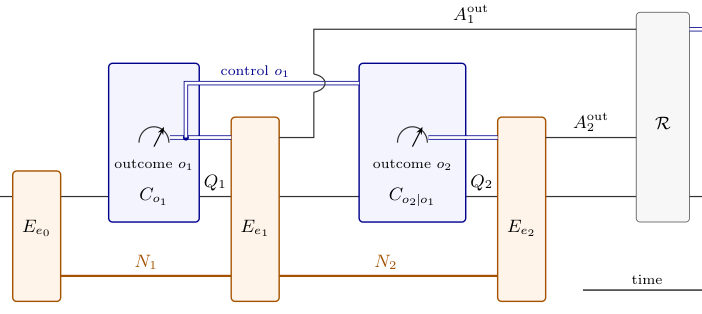
<figcaption class="paper-figure-caption"><b>Fig 1.</b> FIG. 1. An adaptive circuit interacting with temporally correlated noise, shown for two rounds. The circuit implements the quantum instruments {Co1}o1 and {Co2∣o1}o2 where the instrument at round 2 depends on the observed outcome o1. Double blue lines carry classical information. A copy of o1 selects the second instrument before noise acts on its retained record. The orange maps Eer act on the displayed data, record, and memory ports; N1, N2 carry information between noise interactions. Summing over the circuit outcomes and noise Kraus operator indices gives the physical channel. This representation is a generalization of the strategic code scenario [19], where the goal is only to protect...</figcaption>
</figure>
<figure class="paper-figure-card">
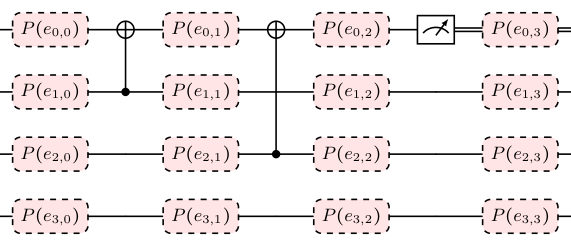
<figcaption class="paper-figure-caption"><b>Fig 2.</b> FIG. 2. A fixed Pauli fault pattern for the Z1Z2 measurement circuit indicating the Kraus operator in Equation (27). Each {P(es,t)}3 s,t=0 is a single qubit Pauli fault.</figcaption>
</figure>
<figure class="paper-figure-card">
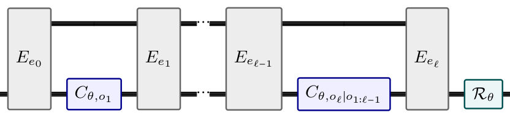
<figcaption class="paper-figure-caption"><b>Fig 3.</b> FIG. 3. Fault-tolerant circuit synthesis with fixed depth ℓ, register dimensions, target operation and noise comb E. The circuit Cθ and its recovery Rθ are chosen jointly subject to the displayed ideal-target and exact-recovery conditions. The local boxes show a fixed noise-Kraus index sequence e = (e0, . . . , eℓ) and circuit outcome sequence o = (o1, . . . , oℓ); summing over e and o gives the noisy channel before recovery. The upper wire carries the noise memory; record registers and classical control are suppressed. Noise acts on the ports specified by the model. For adaptive circuits, the outcome history selects the components as in Theorem III.6.</figcaption>
</figure>
<figure class="paper-figure-card">
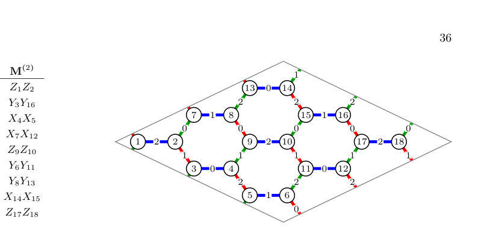
<figcaption class="paper-figure-caption"><b>Fig 4.</b> FIG. 4. Complete measurement schedule. Left: Pauli checks specifying rows of the three binary blocks of M. Right: Honeycomb lattice with opposite sides identified. Circles denote qubit numbers. Edge numbers give the round type 0, 1, 2, repeated as 0, 1, 2, 0, 1, 2, 0. Red, green, and blue edges denote XX, Y Y , and ZZ, respectively.</figcaption>
</figure>
<figure class="paper-figure-card">
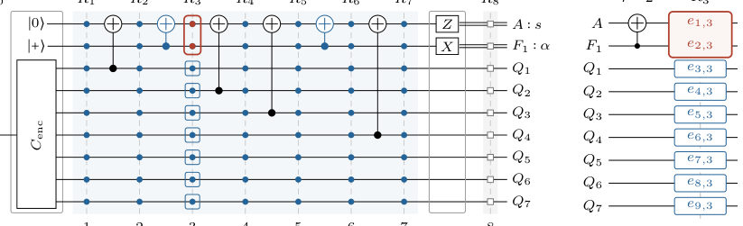
<figcaption class="paper-figure-caption"><b>Fig 5.</b> FIG. 5. Chao–Reichardt one-flag circuit and operation partition. (a) Steane-code (i.e., the µ = 3 specialization of the CSS Hamming code) example [29], with measured support relabeled Q1, . . . , Q4 and ordering π∗= (1, 5, 2, 3, 6, 4). Vertical guides mark the registers Rt. Each marked location carries an arbitrary Pauli label in E(0) π∗. In V(0) π∗, gray labels vanish and all other labels remain unrestricted, including both data boundaries. (b) The red block groups the two outputs of the second CNOT; each blue block is a separate idle-qubit operation location. A nonzero block label counts as one faulty operation. Applying this grouping at every step, with singleton blocks at t = 1,...</figcaption>
</figure>
</div>
<p><strong>Summary.</strong> This paper presents an advanced, mathematically rigorous framework for determining the fault tolerance of quantum circuits. It uses tools from symplectic geometry and linear programming to derive necessary and sufficient conditions and upper bounds on circuit distance. This work is crucial for designing reliable quantum computation protocols by quantifying resilience against noise.</p>
<p><strong>Why it may be interesting.</strong> The deep mathematical machinery connecting symplectic geometry, algebraic coding theory (MacWilliams identities), and fault tolerance provides powerful, general tools for assessing the robustness of quantum computation protocols.</p>
<details>
<summary>Detailed structure</summary>
<p><strong>Main problem.</strong> The paper develops a rigorous framework to analyze the fault tolerance of quantum circuits under various noise models to ensure reliable quantum computation.</p>
<p><strong>Main result.</strong> It establishes necessary and sufficient conditions for fault tolerance and derives linear-programming (LP) bounds on circuit distance using algebraic tools like weight enumerators and symplectic geometry.</p>
<p><strong>Method.</strong> The methodology combines operator-algebraic frameworks, semidefinite programming (SDP) tests, and the use of symplectic geometry to characterize stabilizer symmetries.</p>
<p><strong>Model / system.</strong> The focus is on abstract quantum circuits, specifically non-adaptive stabilizer circuits, analyzed using circuit-noise models and quantum error-correcting codes.</p>
<p><strong>Key observables.</strong> Circuit distance ($d_{	ext{circ}, \zeta}$), detection syndrome, logical-effect matrices, and failure probabilities.</p>
<p><strong>Important parameters / regimes.</strong> Noise models (e.g., depolarizing noise, Pauli noise), circuit structure (e.g., Hastings--Haah honeycomb Floquet-code), and the level of abstraction ($\zeta$).</p>
<p><strong>Assumptions / limitations.</strong> The analysis often assumes specific noise characteristics (e.g., i.i.d. depolarizing noise) or relies on the feasibility of LP relaxations.</p>
<p><strong>Figures summary.</strong> Figure 1 illustrates an adaptive circuit interacting with temporally correlated noise, detailing components like quantum instruments and noise maps.</p>
<p><strong>Paper structure.</strong> The paper progresses from establishing general recovery conditions via SDP tests to specializing the analysis using symplectic geometry for non-adaptive stabilizer circuits, culminating in the derivation of weight enumerators and LP distance bounds.</p>
</details>
<details>
<summary>Abstract</summary>
<p>We develop an operator-algebraic framework for analyzing fault tolerance in quantum circuits and establish necessary and sufficient conditions for fault tolerance under any given noise model. For prescribed circuit families and noise models, we derive a semidefinite program (SDP) based test whose infeasibility certifies that there does not exist any recovery map restoring its intended operation. For non-adaptive stabilizer circuits, analyzing the stabilizer symmetries of its components with symplectic geometry, we obtain closed-form detection and logical-effect matrices that characterize circuit distance algebraically. Applied to a finite Hastings--Haah honeycomb Floquet-code circuit, these matrices certify the dynamical encoding of two logical qubits and distance four under Pauli noise including measurement errors. Using these matrices, we then derive MacWilliams identities for circuit weight enumerators and obtain linear-programming (LP) upper bounds on circuit distance. Output-code constraints give additional Singleton-like bounds. Under independent and identically distributed (i.i.d.) depolarizing noise, the weight enumerators determine decoder failure probabilities and yield upper bounds on finite-circuit pseudothresholds. Finally, we derive LP distance bounds for families of flag syndrome-extraction circuits specified by their CNOT orderings, by incorporating the $t$-flag criterion as additional linear constraints to the distance-bounding LP. An analytical CSS Hamming-code benchmark yields a tight distance-three bound attained by the Chao--Reichardt one-flag construction.</p>
</details>
<p><sub><a href="#top">↑ back to top</a></sub></p>

<p><a id="paper-2610.03594"></a></p>
<h3 id="fault-tolerant-and-fully-addressable-unitary-logical-gates-via-round-robin-sparsification"><a href="http://arxiv.org/abs/2610.03594v1">Fault-tolerant and fully addressable unitary logical gates via round-robin sparsification</a></h3>
<p><strong>Authors:</strong> Kaavya Sahay, Cody Jones<br>
<strong>Type:</strong> theory · <strong>Category:</strong> quantum information and computing · <strong>PDF:</strong> <a href="https://arxiv.org/pdf/2610.03594v1">https://arxiv.org/pdf/2610.03594v1</a><br>
<strong>Analysis basis:</strong> full PDF text, analyzed in chunks</p>
<div class="figure-strip-hint">↔ Scroll figures horizontally</div>
<div class="paper-figures-scroll">
<figure class="paper-figure-card">
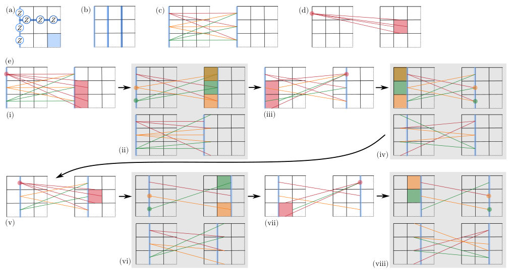
<figcaption class="paper-figure-caption"><b>Fig 1.</b> FIG. 1. A fault-tolerant addressable CZ between two toric codes via round-robin sparsification. (a) The vertical and horizontal Z-logical operators of the two logical qubits of a distance d = 3 toric code with qubits on edges (dashed lines are identified with the opposite edges). On the lower right, we show a Z-stabilizer. (b) Multiple representatives of the vertical Z-logical operator. (c) An RR logical CZ circuit, with individual CZ gates shown by colored lines. (d) A stabilizer deformation, with the stabilizer highlighted, equivalent to a logical identity. (e) The sparsification procedure, consisting of conjugation of the circuit in (c) with various highlighted stabilizer deformations....</figcaption>
</figure>
<figure class="paper-figure-card">
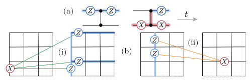
<figcaption class="paper-figure-caption"><b>Fig 2.</b> FIG. 2. Propagation of faults through a toric tCZ. (a) Error propagation rules through a CZ gate. (b) X errors propagate to Zs in two distinct ways: (i) Weight 3 but anti- aligned with least-weight logicals, which natively preserves the distance, or (ii) Weight-2 along a logical. The original X error creates additional detection events which can identify this mechanism without reducing distance.</figcaption>
</figure>
<figure class="paper-figure-card">

<figcaption class="paper-figure-caption"><b>Fig 3.</b> FIG. 3. Using the cylinder trick to extract disjoint logical representatives for RR sparsification on 2DTI codes. (a) Defining lattice elements: (i) edges support h and v qubits (purple); X (red) and Z (blue) ancillae are on vertices • and plaquettes □respectively. (ii) Monomials denote cardinal translations across the lattice. (iii) Stabilizers can be defined via polynomials, shown for cHGP2. (b) Z-Symmetries of 2DTI codes are sets of checks that always product to identity: Any X error leaves an even parity of syndromes in the support of the cHGP2 symmetry. (c) (i) Using the cylinder trick on a cHGP2 symmetry enables the extraction of a Z-logical operator. (ii) Sliding this selection...</figcaption>
</figure>
<figure class="paper-figure-card">

<figcaption class="paper-figure-caption"><b>Fig 4.</b> FIG. 4. L for more 2DTI codes. We show the maximum disjoint logical representative set L of size |J| obtained from the sliding cylinder trick for the (a) d = 6 color and (b) d = 4 cHGP3 codes. Similar to Fig. 3, adjacent disjoint logical representatives are shown via bright and dark blue highlights on the symmetry that supports them. For cHGP3, |J| &lt; d.</figcaption>
</figure>
<figure class="paper-figure-card">

<figcaption class="paper-figure-caption"><b>Fig 5.</b> FIG. 5. Inter-code addressable tCZs with Cα = Cβ. We show logical error rate scaling with physical error rate for a transversal Cα0Zβ0 (blue) compared to memory (orange) across code distances. Across panels, Cα is respectively defined to be toric (left), cyclic HGP-2 (center), or color and NE3N directional (right) codes. In all plots, tCZ scaling matches that of memory. In the center panel, we further change the logical operator targeted in Cβ via the tCZ to other vertical (red) and horizontal (red) Z logical operators, showing unchanged logical performance.</figcaption>
</figure>
</div>
<p><strong>Summary.</strong> This paper develops a novel technique to create fault-tolerant and fully addressable two-qubit gates for various qLDPC quantum error-correcting codes. By applying a structured sparsification procedure to initial round-robin circuits, the authors significantly reduce gate depth while maintaining fault tolerance. This work is vital for realizing scalable quantum computation using lattice-based error correction.</p>
<p><strong>Why it may be interesting.</strong> While focused on abstract QEC codes, the techniques for achieving low-depth, fault-tolerant gates are crucial for scaling up any quantum computation platform, including those based on AMO systems.</p>
<details>
<summary>Detailed structure</summary>
<p><strong>Main problem.</strong> The paper addresses the challenge of creating fault-tolerant and fully addressable unitary logical gates for quantum low-density parity check (qLDPC) codes.</p>
<p><strong>Main result.</strong> The authors introduce a sparsification procedure applied to round-robin circuits that successfully realizes low-depth, fault-tolerant, and addressable two-qubit Clifford gates for a wide class of 2DTI qLDPC codes.</p>
<p><strong>Method.</strong> The core method involves applying a geometrically structured sparsification procedure, utilizing stabilizer deformations and the cylinder trick, to reduce the depth of initial round-robin logical circuits.</p>
<p><strong>Model / system.</strong> The study focuses on quantum error correction (QEC) codes, specifically two-dimensional translationally invariant (2DTI) qLDPC codes, including the toric, color, and various hypergraph-product codes.</p>
<p><strong>Key observables.</strong> Logical error rate (LER), gate depth (aiming for constant depth like 3), and fault-tolerance scaling with physical error rate.</p>
<p><strong>Important parameters / regimes.</strong> The fault distance ($d$) of the code, the physical error rate ($p$), and the code structure (e.g., lattice type, boundary conditions).</p>
<p><strong>Assumptions / limitations.</strong> The initial round-robin circuits are not naturally fault-tolerant, necessitating the sparsification procedure; the generalization to CX gates is stated as trivial for CSS codes.</p>
<p><strong>Figures summary.</strong> Figures illustrate the sparsification process on the toric code, showing logical operators and circuit steps. Other figures benchmark LER scaling for various codes and compare tCZ gates against code surgery operations.</p>
<p><strong>Paper structure.</strong> The paper introduces the problem, details the sparsification technique using stabilizer deformations and the cylinder trick, verifies the protocol on several 2DTI codes, and concludes with numerical simulations comparing the resulting gate performance against alternative methods like code surgery.</p>
</details>
<details>
<summary>Abstract</summary>
<p>For quantum low-density parity check (qLDPC) codes, the ability to manipulate individual logical units of information, i.e. the use of addressable gates, enables maximal utility of their efficient encoding. We introduce explicit low-depth unitary circuits that realize fully addressable and fault-tolerant two-qubit Clifford gates for a subset of two-dimensional translationally invariant qLDPC codes. Our transversal unitaries are created by applying a geometrically structured sparsification procedure to round-robin circuits. We verify the general applicability of our protocol by proposing and numerically simulating a range of addressable CZs between toric, cyclic hypergraph-product, color, gross, and directional codes, demonstrating fault-tolerant memory-like logical error rate scaling.</p>
</details>
<p><sub><a href="#top">↑ back to top</a></sub></p>

<p><a id="paper-2610.03304"></a></p>
<h3 id="free-fermionic-black-holes-as-polarised-mirrors"><a href="http://arxiv.org/abs/2610.03304v1">Free fermionic black holes as polarised mirrors</a></h3>
<p><strong>Authors:</strong> Maureen Krumtünger, Maxwell West<br>
<strong>Type:</strong> theory · <strong>Category:</strong> quantum information and computing · <strong>PDF:</strong> <a href="https://arxiv.org/pdf/2610.03304v1">https://arxiv.org/pdf/2610.03304v1</a><br>
<strong>Analysis basis:</strong> full PDF text, analyzed in chunks</p>
<div class="figure-strip-hint">↔ Scroll figures horizontally</div>
<div class="paper-figures-scroll">
<figure class="paper-figure-card">

<figcaption class="paper-figure-caption"><b>Fig 1.</b> Figure 1. A graphical depiction of the setup of the Hayden– Preskill protocol [1]. The old black hole Bi is assumed to be past the Page time, so that it is modelled as maximally entan- gled with previously emitted radiation E [8]. Alice possesses a Bell state across the system MA, and throws the “message” half of it into the black hole. The internal scrambling dy- namics of the black hole are modelled by a unitary V B acting on the combined system B = MBi. Finally, further modes of radiation constituting a system R are emitted, leaving the final black hole Bf.</figcaption>
</figure>
<figure class="paper-figure-card">

<figcaption class="paper-figure-caption"><b>Fig 2.</b> Figure 2. A tensor network diagram depicting the reduction, via the swap trick [22], of the purity tr h (σ ABf V )2i to a form</figcaption>
</figure>
</div>
<p><strong>Summary.</strong> This work analyzes information scrambling in black hole analogues, moving beyond the idealized Haar-random model to use a random free fermionic model. It finds that these 'polarised mirrors' retain information inefficiently, but shows that adding a small, fixed unitary can restore fast information release, even achieving better performance than the fully random case.</p>
<p><strong>Why it may be interesting.</strong> The comparison between idealized random unitaries and structured, physically motivated random circuits (like free fermionic models) provides concrete, calculable insights into the limits of quantum information scrambling.</p>
<details>
<summary>Detailed structure</summary>
<p><strong>Main problem.</strong> The paper investigates how information scrambling occurs in black hole dynamics, specifically comparing the idealized Haar-random model to a more realistic random free fermionic model.</p>
<p><strong>Main result.</strong> Free fermionic black holes act as 'polarised mirrors,' retaining low-degree information, but augmenting the dynamics with a fixed Clifford unitary can restore fast information release, even outperforming the Haar-random case.</p>
<p><strong>Method.</strong> The analysis uses quantum information theory tools, calculating optimal recovery fidelity and decoupling errors by analyzing the reduced density matrix $\sigma_{AB_f}^V$ after the black hole interaction.</p>
<p><strong>Model / system.</strong> The model is based on the Hayden-Preskill black hole thought experiment, using a random free fermionic evolution (matchgate circuit) to simulate black hole dynamics.</p>
<p><strong>Key observables.</strong> Optimal recovery fidelity ($F_{	ext{rec}}$), decoupling error ($\Delta$), and the rate of information release.</p>
<p><strong>Important parameters / regimes.</strong> Fermionic degree, system dimensions ($d_A, d_{B_f}$), and the deviation from the Haar measure.</p>
<p><strong>Assumptions / limitations.</strong> The analysis builds upon the Hayden-Preskill protocol and compares the free fermionic dynamics to the ideal Haar-random unitary evolution.</p>
<p><strong>Figures summary.</strong> Figure 1 illustrates the setup of the Hayden–Preskill protocol, showing the partitioning of the total system into $E$, $B_i$, $M$, $A$, $R$, and $B_f$.</p>
<p><strong>Paper structure.</strong> The paper progresses from establishing the general framework of information scrambling to deriving rigorous mathematical bounds on the recovery fidelity for both Haar-random and free fermionic dynamics, culminating in the analysis of augmentation strategies.</p>
</details>
<details>
<summary>Abstract</summary>
<p>Understanding the speed with which various classes of quantum systems can scramble information is a key goal of quantum information theory, with relevance to both fundamental physics and the study of the efficiency of quantum algorithms. Famously, such understanding enabled Hayden and Preskill to show that, under the assumption that black hole dynamics may be modelled by a Haar-random unitary, old black holes act as ''mirrors'', reflecting infalling quantum information back out again effectively instantaneously. In this work, we investigate which aspects of this mirror behaviour survive beyond the Haar-random setting by considering a random free fermionic model of black hole dynamics. We find that the rate of information release is governed by the underlying representation-theoretic structure; such a black hole acts as a ''polarised mirror'', retaining information encoded in low fermionic-degree irreps while reflecting information encoded in high fermionic-degree irreps much more rapidly. As a result of the retention of low-degree information, we show that faithful recovery of the infalling quantum information is impossible until all but a vanishing fraction of the black hole has evaporated. However, augmenting the dynamics with a fixed Clifford unitary can restore their reflective behaviour, even though the ensemble's frame potential remains unchanged and far above its Haar value. Remarkably, we find that such black holes can outperform their fully Haar-random counterparts: in the high-fidelity limit, recovering a single-qubit message requires asymptotically approximately $37\%$ fewer emitted qubits.</p>
</details>
<p><sub><a href="#top">↑ back to top</a></sub></p>

<p><a id="paper-2610.03580"></a></p>
<h3 id="from-symmetry-to-secrecy-covariant-classical-quantum-wiretap-channels"><a href="http://arxiv.org/abs/2610.03580v1">From Symmetry to Secrecy: Covariant Classical--Quantum Wiretap Channels</a></h3>
<p><strong>Authors:</strong> Masahito Hayashi, Farzin Salek<br>
<strong>Type:</strong> theory · <strong>Category:</strong> quantum information and computing · <strong>PDF:</strong> <a href="https://arxiv.org/pdf/2610.03580v1">https://arxiv.org/pdf/2610.03580v1</a><br>
<strong>Analysis basis:</strong> full PDF text, analyzed in chunks</p>
<div class="figure-strip-hint">↔ Scroll figures horizontally</div>
<div class="paper-figures-scroll">
<figure class="paper-figure-card">

<figcaption class="paper-figure-caption"><b>Fig 1.</b> FIG. 1. Covariance: permuting the classical input labels and conjugating the output states give the same channel outputs.</figcaption>
</figure>
<figure class="paper-figure-card">

<figcaption class="paper-figure-caption"><b>Fig 2.</b> FIG. 2. A cq wiretap channel has one classical input and two quantum outputs. The coding problem compares the information available to Bob with the information leaked to Eve.</figcaption>
</figure>
<figure class="paper-figure-card">

<figcaption class="paper-figure-caption"><b>Fig 3.</b> FIG. 3. The covariant preprocessing. Conditioned on V = v the input is the translate LvP1, whose entropies do not depend on v; the input marginal is the convolution P3 ∗P1.</figcaption>
</figure>
<figure class="paper-figure-card">

<figcaption class="paper-figure-caption"><b>Fig 4.</b> FIG. 4. Encoding for the covariant bound. The hash seed determines the fiber from which the randomized index is drawn, and P1 supplies the sender-side group randomization.</figcaption>
</figure>
<figure class="paper-figure-card">

<figcaption class="paper-figure-caption"><b>Fig 5.</b> FIG. 5. The single-use entropy difference f1(x, 0.05) −f2(x, 0.15) of the hybrid binary channel as a function of the input probability x. The minimum sits at a nonzero x, so the optimal sender noise is not a point mass: noisy preprocessing already pays off at a single channel use.</figcaption>
</figure>
</div>
<p><strong>Summary.</strong> This paper develops theoretical bounds for the private information capacity of classical-quantum wiretap channels that possess specific symmetry properties (covariance). By leveraging group theory, the authors derive capacity formulas based on entropy differences calculated via group convolution. The work provides explicit examples of nonadditivity and compares achievable rates against standard benchmarks, advancing the understanding of secure quantum communication limits.</p>
<p><strong>Why it may be interesting.</strong> While focused on information theory, the use of group theory to constrain quantum channel behavior (covariance) provides powerful mathematical tools applicable to characterizing symmetries in open quantum systems or quantum communication protocols.</p>
<details>
<summary>Detailed structure</summary>
<p><strong>Main problem.</strong> The paper analyzes the private communication capacity of classical-quantum wiretap channels, focusing on how this capacity scales with multiple channel uses.</p>
<p><strong>Main result.</strong> For covariant channels, the private information capacity is bounded below by expressions involving the convolution of an entropy difference functional derived from group theory.</p>
<p><strong>Method.</strong> The authors utilize group theory to characterize the channel structure via covariant actions, leading to bounds based on entropy differences calculated over group convolutions.</p>
<p><strong>Model / system.</strong> The model is a classical-quantum (cq) wiretap channel, where Alice transmits a classical message, and Bob and Eve receive quantum states. The analysis is specialized for channels exhibiting transitive covariance.</p>
<p><strong>Key observables.</strong> Private information, quantified as $I(V; B) - I(V; E)$, and the entropy difference $\Delta(P) = H(
ho_B(P)) - H(
ho_E(P))$.</p>
<p><strong>Important parameters / regimes.</strong> The number of channel uses ($n$), the channel parameter $p$ (in the hybrid binary case), and the structure of the underlying group $G$.</p>
<p><strong>Assumptions / limitations.</strong> The analysis heavily relies on the assumption that the input action is transitive and covariant, allowing the channel to be described by unitary group orbits.</p>
<p><strong>Figures summary.</strong> Figure 1 illustrates the covariance property of the channel. Figure 7 compares the achieved rate ($    ext{Rach}<em _log="\log" n>n$) against the repetition benchmark ($ ext{Rrep}</em>$) for $n=2, 3, 4$ uses.</p>
<p><strong>Paper structure.</strong> The paper first establishes the group-theoretic structure of covariant channels, deriving bounds using preprocessing schemes based on entropy differences. It then applies these tools to specific models, including a hybrid binary channel, to demonstrate nonadditivity and compare achievable rates against theoretical benchmarks.</p>
</details>
<details>
<summary>Abstract</summary>
<p>For classical--quantum wiretap channels with a transitive covariant input action, both output ensembles admit a description as unitary group orbits of fixed seed states. We use this structure to construct finite-block preprocessing schemes whose private information is an entropy difference evaluated at two distributions related by group convolution. Applying the construction to product groups allows correlations across any fixed number of channel uses. We give a sufficient condition for the associated uniform-input bound to equal the single-use private information. Constant-composition channel codes and universal$_2$ hashing achieve the resulting rates, with trace-distance leakage controlled by sandwiched Rényi information. For uniform outer randomization, the representation structure reduces the comparison-state optimization to Eve's invariant states. For the hybrid binary channel considered by Tikku, Berta and Renes, numerical optimization at three and four uses gives rates above our numerical estimate of the optimized noisy-repetition benchmark wherever that estimate is positive on the tested grid. The improvement comes from noise distributions beyond the family of independent physical flips and a symmetric logical flip. We also prove nonadditivity at an explicit channel parameter using a two-use encoder, an analytic single-use converse, and certified entropy bounds. Finally, we relate the hybrid model to binary phase-shift keying with a fixed receiver measurement.</p>
</details>
<p><sub><a href="#top">↑ back to top</a></sub></p>

<p><a id="paper-2610.03446"></a></p>
<h3 id="geometric-aspects-of-entanglement"><a href="http://arxiv.org/abs/2610.03446v1">Geometric Aspects of Entanglement</a></h3>
<p><strong>Authors:</strong> Lucio De Simone, Lorenzo Capra, Arthur Vesperini, Leonardo Rossi, Loris Di Cairano, Roberto Franzosi<br>
<strong>Type:</strong> theory · <strong>Category:</strong> quantum information and computing · <strong>PDF:</strong> <a href="https://arxiv.org/pdf/2610.03446v1">https://arxiv.org/pdf/2610.03446v1</a><br>
<strong>Analysis basis:</strong> full PDF text, analyzed in chunks</p>
<div class="figure-strip-hint">↔ Scroll figures horizontally</div>
<div class="paper-figures-scroll">
<figure class="paper-figure-card">

<figcaption class="paper-figure-caption"><b>Fig 1.</b> FIG. 1. This figure reports the three-dimensional plot of the ED E(|ψ⟩) as a function of θ and φ for the states (42).</figcaption>
</figure>
</div>
<p><strong>Summary.</strong> This work introduces the Entanglement Distance (ED), a novel geometric measure derived from the Fubini-Study metric on the projective Hilbert space to quantify quantum entanglement. By exploiting the geometry of local operations, the ED provides a rigorous, intrinsic measure that successfully reproduces known entanglement monotones for two-qubit systems. It offers a deep geometric interpretation of quantum correlations for multipartite systems.</p>
<p><strong>Why it may be interesting.</strong> The geometric approach offers a powerful, intrinsic mathematical tool to quantify entanglement, potentially providing a unified framework applicable to complex, high-dimensional quantum systems beyond simple bipartite settings.</p>
<details>
<summary>Detailed structure</summary>
<p><strong>Main problem.</strong> The paper aims to provide a geometric characterization and quantification of quantum entanglement, particularly in complex multipartite systems.</p>
<p><strong>Main result.</strong> The derived Entanglement Distance (ED) is shown to be a geometric measure that quantifies entanglement as an obstruction to local minimization, reproducing established measures like concurrence for two qubits.</p>
<p><strong>Method.</strong> The methodology involves analyzing the Riemannian structure induced by the Fubini-Study metric on the projective Hilbert space of multi-qubit states.</p>
<p><strong>Model / system.</strong> The system under study consists of multi-qubit quantum states, treated mathematically on the projective Hilbert space PH. The analysis focuses on the geometry induced by local unitary transformations.</p>
<p><strong>Key observables.</strong> Entanglement Distance (ED), Concurrence, Entropy of Entanglement, Fubini-Study metric tensor.</p>
<p><strong>Important parameters / regimes.</strong> The number of qubits (M), the specific local unitary transformations applied.</p>
<p><strong>Assumptions / limitations.</strong> The derivation relies on exploiting the local-unitary invariance of the Fubini-Study metric, though the correspondence with standard measures is noted to be limited beyond the two-qubit case.</p>
<p><strong>Figures summary.</strong> Figure 1 shows a three-dimensional plot of the ED as a function of angular parameters ($   heta, \phi$) for specific multi-qubit states.</p>
<p><strong>Paper structure.</strong> The paper first establishes the geometric framework using the Fubini-Study metric on PH. It then derives the entanglement measure (ED) based on local-unitary invariance. Finally, it analyzes the properties of ED, showing its equivalence to known measures in the bipartite two-qubit case.</p>
</details>
<details>
<summary>Abstract</summary>
<p>Quantum entanglement is a fundamental resource in quantum information theory, yet its general characterization and quantification remain challenging, especially in multipartite systems. In this work we investigate entanglement from a geometric perspective, focusing on the Riemannian structure induced by the Fubini--Study metric on the projective Hilbert space of multi-qubit quantum states. By exploiting the local-unitary invariance of this metric, we derive the entanglement distance (ED), a geometric measure that quantifies entanglement as an obstruction to locally minimizing the sum of squared Fubini--Study distances generated by local operations.   We analyze the properties of ED for pure multi-qubit states and discuss its behavior under local operations and classical communication. In particular, we show that ED reproduces established entanglement measures in well-defined and restricted settings. For pure states of two qubits, ED reduces to an exact monotone function of the concurrence and, independently, to an explicit monotone function of the entropy of entanglement. These results provide a clear geometric interpretation of standard bipartite entanglement measures within the present framework, while highlighting the limitations of such correspondences beyond the two-qubit case.</p>
</details>
<p><sub><a href="#top">↑ back to top</a></sub></p>

<p><a id="paper-2610.03711"></a></p>
<h3 id="how-to-build-pseudorandom-unitaries-in-microcrypt"><a href="http://arxiv.org/abs/2610.03711v1">How to Build Pseudorandom Unitaries in Microcrypt</a></h3>
<p><strong>Authors:</strong> Aditya Gulati, Dakshita Khurana, Kabir Tomer<br>
<strong>Type:</strong> theory · <strong>Category:</strong> quantum information and computing · <strong>PDF:</strong> <a href="https://arxiv.org/pdf/2610.03711v1">https://arxiv.org/pdf/2610.03711v1</a><br>
<strong>Analysis basis:</strong> full PDF text, analyzed in chunks</p>
<div class="figure-strip-hint">↔ Scroll figures horizontally</div>
<div class="paper-figures-scroll">
<figure class="paper-figure-card">

<figcaption class="paper-figure-caption"><b>Fig 1.</b> Low-resolution page preview, page 2</figcaption>
</figure>
<figure class="paper-figure-card">

<figcaption class="paper-figure-caption"><b>Fig 2.</b> Low-resolution page preview, page 3</figcaption>
</figure>
<figure class="paper-figure-card">

<figcaption class="paper-figure-caption"><b>Fig 3.</b> Low-resolution page preview, page 4</figcaption>
</figure>
<figure class="paper-figure-card">

<figcaption class="paper-figure-caption"><b>Fig 4.</b> Low-resolution page preview, page 5</figcaption>
</figure>
<figure class="paper-figure-card">

<figcaption class="paper-figure-caption"><b>Fig 5.</b> Low-resolution page preview, page 6</figcaption>
</figure>
</div>
<p><strong>Summary.</strong> This paper constructs a specific type of quantum circuit, a Pseudorandom Unitary (PRU), that is provably secure even when one-way functions are not assumed to exist. By showing this separation using a classical random oracle, the authors provide strong theoretical evidence that PRUs do not necessarily imply the existence of quantum-computable one-way functions.</p>
<p><strong>Why it may be interesting.</strong> While the focus is on complexity theory, the concept of PRUs is fundamental to quantum cryptography and quantum information protocols, which are key areas for theoretical quantum physicists.</p>
<details>
<summary>Detailed structure</summary>
<p><strong>Main problem.</strong> The paper aims to provide evidence that Pseudorandom Unitaries (PRUs) can exist without relying on the existence of quantum-computable one-way functions (OWFs).</p>
<p><strong>Main result.</strong> They construct a PRU using a specific circuit structure that is proven secure against uniform BQP adversaries, establishing a black-box separation between PRUs and quantum-computable OWFs.</p>
<p><strong>Method.</strong> The security proof involves analyzing the circuit's behavior against adaptive queries to the unitary and its related operations, utilizing complex mathematical tools like normalized records and comparison recorders.</p>
<p><strong>Model / system.</strong> The model is a quantum circuit realizing the PRU: U = F_5 H F_4 H F_3 H F_2 H F_1, where F_i are random diagonal phase layers and H are Hadamard transforms. The security proof is framed in terms of classical oracles and QMA/PH decision problems.</p>
<p><strong>Key observables.</strong> Acceptance probabilities ($    ext{acc}_y(w)$), the structure of the PRU itself, and the separation between PRU security and OWF existence.</p>
<p><strong>Important parameters / regimes.</strong> The security relies on the existence of a classical random oracle O, and the analysis involves parameters like $\epsilon, c, \delta$, and $C$ from the underlying complexity theory proofs.</p>
<p><strong>Assumptions / limitations.</strong> The result is conditional on the existence of a classical random oracle O, and the security proof relies on access to suitable Boolean completions of classical-input QMA/PH decision problems.</p>
<p><strong>Paper structure.</strong> The paper develops through multiple stages, first establishing the PRU construction and its security under controlled access, then strengthening the result against QMA-aided adversaries, and finally using complex mathematical machinery (like encoding methods and bounds) to formalize the separation.</p>
</details>
<details>
<summary>Abstract</summary>
<p>We provide the first evidence relative to a classical oracle that pseudorandom unitaries (PRUs) can exist without quantum-computable one-way functions.   To obtain this result, we first prove that five independent random diagonal phase layers interleaved with Hadamard transforms \[ U=F_5HF_4HF_3HF_2HF_1 \] form a strong PRU with security under adaptive, controlled access to the unitary, its inverse, transpose, and complex conjugate.   Our main result is that, when the phase layers are implemented using a classical random oracle O, the construction remains secure against uniform BQP adversaries with coherent access to suitable Boolean completions of classical-input $QMA^{PH}^{O}}$ decision problems. Such an adversary can invert (even quantum-computable) one-way functions and solve efficiently verifiable one-way puzzles defined relative to O. Our result therefore provides classical-oracle evidence that PRUs do not imply quantum-computable one-way functions, in the form of a black-box separation.   We substantially strengthen the classical-oracle result of Kretschmer, Qian, and Tal (STOC 2025) by obtaining PRUs secure against these QMA-aided adversaries. Our construction also consists of a simple, efficient circuit that queries a random function, suggesting a route to concrete implementation via the random-oracle heuristic.</p>
</details>
<p><sub><a href="#top">↑ back to top</a></sub></p>

<p><a id="paper-2610.03682"></a></p>
<h3 id="low-overhead-quantum-error-correction-with-boundary-connected-planar-modules"><a href="http://arxiv.org/abs/2610.03682v1">Low-Overhead Quantum Error Correction with Boundary-Connected Planar Modules</a></h3>
<p><strong>Authors:</strong> Oscar Higgott, Hasan Sayginel, Francisco J. H. Heras, Zhiyang He, Tomas Jochym-O'Connor, Andrew W. Senior, Lei M. Zhang, Thomas Edlich, James S. Spencer, Matt McEwen, Craig Gidney, Johannes Bausch, Pushmeet Kohli, Hartmut Neven<br>
<strong>Type:</strong> theory · <strong>Category:</strong> quantum information and computing · <strong>PDF:</strong> <a href="https://arxiv.org/pdf/2610.03682v1">https://arxiv.org/pdf/2610.03682v1</a><br>
<strong>Analysis basis:</strong> full PDF text, analyzed in chunks</p>
<div class="figure-strip-hint">↔ Scroll figures horizontally</div>
<div class="paper-figures-scroll">
<figure class="paper-figure-card">

<figcaption class="paper-figure-caption"><b>Fig 1.</b> FIG. 1. Hardware models. In all panels, black circles represent data qubits and red (blue) squares represent measure qubits for X (Z) stabilizers. a, A monolithic grid architecture, in which qubits are placed on a plane with 2D nearest-neighbor grid connectivity. This geometry supports the Euclidean surface code, shown here. b, A general QLDPC architecture, in which each qubit is coupled to a constant number of other qubits, without additional constraints on geometric locality. Couplers may cross and may be long-range, as shown here for the Gross code [11]. Each edge represents a coupler between qubits. c, A boundary-connected modular architecture. Planar modules are connected by flexible...</figcaption>
</figure>
<figure class="paper-figure-card">

<figcaption class="paper-figure-caption"><b>Fig 2.</b> FIG. 2. Construction of a modular hyperbolic color code, using the [[256, 8, 12]] Bolza color code as an example. a, The base infinite hyperbolic tiling, shown in the Poincar´e disk model, has triangular faces with 8 meeting at each vertex (face configuration V8.8.8). Its vertices are three-colorable (red, green, blue), with one vertex of each color per triangle. Each edge is assigned the third color, absent from its two vertices. The fundamental polygon of the genus-2 Bolza surface is shaded, and contains 16 triangles. b, The semi-hyperbolic color code obtained by replacing each triangular face with a Euclidean hexagonal tiling of side length L = 4, giving a tiling of the surface by...</figcaption>
</figure>
<figure class="paper-figure-card">

<figcaption class="paper-figure-caption"><b>Fig 3.</b> FIG. 3. Simulation data for modular hyperbolic codes using an SI1000 noise model with p = 0.1% and inter-module CZ gates adjusted to have a noise strength of pseam = 1% (see Methods for details). a, Modular hyperbolic color codes derived from V8.8.8 hyperbolic tilings using L = 2 and an octagon module partition. b, Modular hyperbolic surface codes derived from {4, 10} regular hyperbolic tilings with L = 5 and a rectangle module partition. In both panels we compare with Euclidean surface codes partitioned into modules of a comparable size (with additional measure qubits on the boundaries).</figcaption>
</figure>
<figure class="paper-figure-card">

<figcaption class="paper-figure-caption"><b>Fig 4.</b> FIG. 4. Logical control architecture: code automorphisms and a ribbon extractor. a, A symplectic pair of homologically non- trivial cycles on the semi-hyperbolic tiling of the [[6400, 104, 30]] color code, drawn as solid and dashed lines. The two cycles are related by ρ, a global rigid rotation of the tiling by π/2 (green arrows). Together with a second rotation σ (purple arrows), these generate all rotations of the tiling, each of which permutes the modules while preserving the codespace (a code automorphism). Logical Pauli operators are supported on the monochromatic substrings of a cycle, obtained by restricting it to edges of a single color. Two of the three colors (e.g. blue and red)...</figcaption>
</figure>
</div>
<p><strong>Summary.</strong> This work addresses the high resource cost of quantum error correction by proposing a modular architecture based on hyperbolic surface codes. By partitioning the quantum processor into smaller, connected planar modules, the authors significantly reduce the physical qubit overhead compared to traditional surface codes. This method enables the realization of high-rate, fault-tolerant quantum memory using nearest-neighbor gates within modules.</p>
<p><strong>Why it may be interesting.</strong> The focus on modularity and hyperbolic geometry provides a novel pathway to scaling QEC beyond the limitations of planar architectures, which is crucial for building large-scale quantum computers.</p>
<details>
<summary>Detailed structure</summary>
<p><strong>Main problem.</strong> The primary challenge is reducing the substantial physical qubit overhead associated with implementing quantum error correction (QEC) using standard codes like the planar surface code.</p>
<p><strong>Main result.</strong> The authors propose a modular architecture using boundary-connected planar modules, achieving an overhead reduction of over $30	imes$ compared to surface codes while maintaining high encoding rates and distances.</p>
<p><strong>Method.</strong> They construct modular hyperbolic surface and color codes by partitioning processors into flat modules connected by sparse, static boundary links, and utilize efficient neural network and matching decoders.</p>
<p><strong>Model / system.</strong> The model involves partitioning quantum processors into Euclidean planar modules that are connected to form hyperbolic surfaces. The codes derived are semi-hyperbolic, combining hyperbolic geometry with local planar lattice structures.</p>
<p><strong>Key observables.</strong> Encoding rate ($k/n=1/16$), distance ($d\geq 22$), and physical qubit overhead (projected to $36$ physical qubits per logical qubit for $d=20-24$).</p>
<p><strong>Important parameters / regimes.</strong> Inter-module seam error rates (tolerated up to 1%), and the genus ($g$) of the underlying hyperbolic surface.</p>
<p><strong>Assumptions / limitations.</strong> The approach assumes that local planar gates operate below the surface code threshold and that inter-module link resonators can achieve error rates approaching 1%.</p>
<p><strong>Figures summary.</strong> Figure 1 compares three hardware models (monolithic, general QLDPC, modular hyperbolic). Figure 2 illustrates the construction of the modular hyperbolic color code via tiling and fine-graining. Figure 3 compares performance metrics across different code types.</p>
<p><strong>Paper structure.</strong> The paper introduces the modular concept, details the construction of hyperbolic color and surface codes via tiling, describes the syndrome extraction and decoding circuits, and concludes by demonstrating the resulting low-overhead, fault-tolerant memory design.</p>
</details>
<details>
<summary>Abstract</summary>
<p>Realizing practical quantum computers requires quantum error correction, but the most widely implemented approach, the planar surface code, demands a substantial physical qubit overhead. Here, we demonstrate that partitioning quantum processors into manageable, flat modules with non-local inter-module connections provides a natural solution. By wiring sparse, static boundary connections between Euclidean planar modules, we construct modular hyperbolic surface and color codes, based on new families of semi-hyperbolic codes. Using modular syndrome extraction circuits and efficient neural network and matching decoders, our circuit-level simulations show that this modular memory design can reduce the physical qubit overhead by tenfold or more compared to the surface code, even under elevated inter-module seam error rates. Projecting to larger system sizes, we find modular codes with encoding rate $k/n=1/16$ and distance $d\geq 22$, exceeding both the rate and distance of the $[[288,12,18]]$ two-gross bivariate bicycle code while using mostly nearest-neighbor gates within planar modules, and implying an over $30\times$ overhead reduction relative to surface codes. We develop fault-tolerant walking circuits for implementing logic via code automorphisms, which we co-design with low-weight, highly symmetrical logical bases and a modular extractor system that is $\approx 4.5\times$ smaller than the code itself. Combining these methods, our modular memory can be used as dense storage in a universal fault-tolerant architecture, unlocking the efficiency of high-rate codes without sacrificing the fabrication advantages of planar modules.</p>
</details>
<p><sub><a href="#top">↑ back to top</a></sub></p>

<p><a id="paper-2610.03393"></a></p>
<h3 id="multivariate-quantum-signal-processing-with-optimal-query-complexity"><a href="http://arxiv.org/abs/2610.03393v1">Multivariate quantum signal processing with optimal query complexity</a></h3>
<p><strong>Authors:</strong> Mingrui Jing, Xin Wang, Zhan Yu, Lei Zhang<br>
<strong>Type:</strong> theory · <strong>Category:</strong> quantum information and computing · <strong>PDF:</strong> <a href="https://arxiv.org/pdf/2610.03393v1">https://arxiv.org/pdf/2610.03393v1</a><br>
<strong>Analysis basis:</strong> full PDF text, analyzed in chunks</p>
<div class="figure-strip-hint">↔ Scroll figures horizontally</div>
<div class="paper-figures-scroll">
<figure class="paper-figure-card">

<figcaption class="paper-figure-caption"><b>Fig 1.</b> FIG. 1. The circuit W(x; a, θ, ϕ) in Equation (17) that simulates P(x) for P ∈PL, where a, θ, ϕ are parameters that depend on P. Here N ′ = N −1 and LN is the largest entry of L.</figcaption>
</figure>
<figure class="paper-figure-card">

<figcaption class="paper-figure-caption"><b>Fig 2.</b> FIG. 2. The circuit V (U; a, θ, ϕ) in Equation (33), where the parameters a, θ, ϕ of PREP and G(l) are the same as in Figure 1 and are omitted. Here all entries of L are even, N ′ = N −1, and LN is the largest entry of L; the layers with even l query C0(Uj) and those with odd l query C1(Uj).</figcaption>
</figure>
</div>
<p><strong>Summary.</strong> This paper develops advanced techniques for simulating multivariate polynomial transformations in quantum circuits, achieving optimal query complexity for both continuous variables and discrete unitaries. It also provides a deep theoretical framework using SDP duality to precisely quantify the minimum resources needed to realize such operations within a fixed quantum hardware workspace.</p>
<p><strong>Why it may be interesting.</strong> The work provides fundamental tools for designing efficient quantum algorithms by providing tight bounds on resource costs (queries) and characterizing the limits of quantum computation in constrained physical settings.</p>
<details>
<summary>Detailed structure</summary>
<p><strong>Main problem.</strong> The paper addresses the challenge of efficiently implementing general multivariate polynomial transformations of quantum signals or unitaries while minimizing the required number of quantum queries.</p>
<p><strong>Main result.</strong> It presents quantum circuits that achieve optimal query complexity for realizing multivariate trigonometric polynomials and extends this to commuting unitaries. Furthermore, it establishes rigorous mathematical criteria (via SDP duality) for determining the minimum required normalization for such operations in fixed-workspace quantum signal processing.</p>
<p><strong>Method.</strong> The methods involve constructing specialized quantum circuits using frequency component sharing for polynomial simulation, and employing Semidefinite Programming (SDP) duality theory to characterize the achievable quantum signal processing norm.</p>
<p><strong>Model / system.</strong> The model involves quantum signals defined by multivariate trigonometric polynomials $P(\mathbf{x})$ or transformations of commuting unitaries $P(\mathbf{U})$. The analysis is framed within quantum circuit complexity and quantum learning models.</p>
<p><strong>Key observables.</strong> Query complexity (minimum number of times each input operation is used), gradient variance, and the quantum signal processing measure $\Gamma_\chi(P)$.</p>
<p><strong>Important parameters / regimes.</strong> The degree of the polynomial, the number of variables ($N$), the depth of the circuit, and the fixed workspace dimension ($D$).</p>
<p><strong>Assumptions / limitations.</strong> For learning analysis, independent uniform initialization is assumed for gradient variance bounds. For signal processing, the analysis relies on strong duality theorems for SDPs and the existence of specific rank constraints for exact realization.</p>
<p><strong>Figures summary.</strong> Figure 1 illustrates the quantum circuit structure $W(\mathbf{x}; \mathbf{a}, 	heta, \phi)$ used to simulate the polynomial $P(\mathbf{x})$.</p>
<p><strong>Paper structure.</strong> The paper progresses from constructing circuits for polynomial simulation with optimal query complexity to analyzing gradient variance in quantum learning. It then delves into the rigorous mathematical characterization of quantum signal processing capability using SDP duality and deriving exact, non-convex feasibility criteria for fixed-workspace realization.</p>
</details>
<details>
<summary>Abstract</summary>
<p>Polynomial transformations of data encoded in quantum operations are a building block of quantum algorithms, and their query complexity measures how often those operations are used. For multiple variables, existing methods either realize restricted polynomial families or implement monomials separately at a query cost exponential in the number of variables. We present a quantum circuit that implements every multivariate trigonometric polynomial up to an explicit normalization. The circuit processes one variable coherently over the frequency components of the remaining variables, allowing all components to share the same signal queries. Each variable is queried exactly as many times as its degree in the polynomial, and we prove that this query complexity is optimal. We further extend the construction to commuting unitaries. The resulting circuit applies the multivariate polynomial simultaneously across their shared eigenbasis, using the minimum numbers of forward and inverse queries to each unitary. We also study trainable rotations with fixed preparation and a local readout of the last input. At query depth at least two, independent uniform initialization gives every active readout gradient a variance lower bound set by its squared branch weight and the inverse square root of the depth, uniformly over data states and dimensions. For supervised squared loss, retaining sample correlations gives an initialization gradient-variance bound in terms of targets and input spectra. This also bounds the expected loss decrease after the first exact gradient step with a specified step size. These results provide a scalable and practical solution for developing multivariate quantum algorithms and quantum learning models.</p>
</details>
<p><sub><a href="#top">↑ back to top</a></sub></p>

<p><a id="paper-2610.03377"></a></p>
<h3 id="no-size-preserving-amplification-with-quantum-advice"><a href="http://arxiv.org/abs/2610.03377v1">No Size-Preserving Amplification with Quantum Advice</a></h3>
<p><strong>Authors:</strong> Shih-Han Hung, Han-Hsuan Lin<br>
<strong>Type:</strong> theory · <strong>Category:</strong> quantum information and computing · <strong>PDF:</strong> <a href="https://arxiv.org/pdf/2610.03377v1">https://arxiv.org/pdf/2610.03377v1</a><br>
<strong>Analysis basis:</strong> full PDF text, analyzed in chunks</p>
<div class="figure-strip-hint">↔ Scroll figures horizontally</div>
<div class="paper-figures-scroll">
<figure class="paper-figure-card">

<figcaption class="paper-figure-caption"><b>Fig 1.</b> Low-resolution page preview, page 2</figcaption>
</figure>
<figure class="paper-figure-card">

<figcaption class="paper-figure-caption"><b>Fig 2.</b> Low-resolution page preview, page 3</figcaption>
</figure>
<figure class="paper-figure-card">

<figcaption class="paper-figure-caption"><b>Fig 3.</b> Low-resolution page preview, page 4</figcaption>
</figure>
<figure class="paper-figure-card">

<figcaption class="paper-figure-caption"><b>Fig 4.</b> Low-resolution page preview, page 5</figcaption>
</figure>
<figure class="paper-figure-card">

<figcaption class="paper-figure-caption"><b>Fig 5.</b> Low-resolution page preview, page 6</figcaption>
</figure>
</div>
<p><strong>Summary.</strong> This paper proves a significant limitation in quantum computation theory by showing that error reduction in quantum algorithms with fixed-size quantum advice cannot be arbitrarily small. It establishes a quantitative separation between complexity classes $   ext{BQP}<em _epsilon_delta="\epsilon+\delta">{\epsilon}/    ext{q}^m$ and $ ext{BQP}</em>^m$, using sophisticated tools from coding theory and information theory.}/ ext{q</p>
<p><strong>Why it may be interesting.</strong> This work establishes fundamental limitations on how much error reduction can be achieved in quantum computation when the advice state size is fixed, which has implications for the theoretical limits of quantum computation models.</p>
<details>
<summary>Detailed structure</summary>
<p><strong>Main problem.</strong> The paper investigates whether the size-preserving amplification property, known for quantum Merlin-Arthur games, holds for quantum computation utilizing quantum advice.</p>
<p><strong>Main result.</strong> It proves that this size-preserving amplification fails for quantum advice, demonstrating a strict separation between complexity classes $ ext{BQP}<em _epsilon_delta="\epsilon+\delta">{\epsilon}/    ext{q}^m$ and $ ext{BQP}</em>^m$.}/ ext{q</p>
<p><strong>Method.</strong> The proof uses advanced techniques combining diagonalization arguments, random access coding theory (Toeplitz codes), and entropy analysis derived from information theory bounds.</p>
<p><strong>Model / system.</strong> The model involves computational complexity classes defined by polynomial-time quantum algorithms ($    ext{BQP}$) that receive an advice state ($    ext{q}^m$) of fixed size $m(n)$ depending only on the input length $n$.</p>
<p><strong>Key observables.</strong> The separation gap $\delta(n)$ quantifying the required increase in error tolerance to establish the inclusion failure.</p>
<p><strong>Important parameters / regimes.</strong> Advice length $m(n) \geq n^4$, error bounds $\epsilon(n)$ staying below $1/2$ by an inverse polynomial, and the separation gap $\delta(n) = O(\min\{(\log m/m)^{1/4}, \sqrt{\log m/m/(1/2-\epsilon(n))}\})$.</p>
<p><strong>Assumptions / limitations.</strong> The analysis assumes the existence of polynomially bounded advice length $m(n)$ and that the error bound $\epsilon(n)$ is sufficiently far from $1/2$.</p>
<p><strong>Paper structure.</strong> The paper builds from fundamental entropy bounds ($\Phi(\epsilon, \eta)$) and random access code theorems (Nayak's bound) to construct specific languages $L(k)_R$. It then uses these constructions to prove lower and upper bounds, culminating in the separation results between $    ext{P}<em _epsilon="\epsilon">{\epsilon+\delta}/   ext{r}^m$ and $ ext{BQP}</em>^m$.}/    ext{q</p>
</details>
<details>
<summary>Abstract</summary>
<p>Marriott and Watrous showed that quantum Merlin--Arthur games admit generic error reduction without increasing witness size [Computational Complexity, 2005]. In this work, we show that this state-size-preserving amplification property does not hold for polynomial-time quantum computation with quantum advice. In particular, we present decision problems for which even a vanishing additive error reduction requires longer advice. More precisely, for every polynomially bounded advice length $m(n)\geq n^4$ and every error bound $\varepsilon(n)$ that stays below $1/2$ by at least an inverse polynomial, there is a positive function $δ$ with $δ(n)=O\bigl(\min\{(\log m/m)^{1/4},\ \sqrt{\log m/m}\,/(1/2-\varepsilon(n))\}\bigr)$ such that $\mathsf{BQP}_{\varepsilon}/\mathsf{q}m \subsetneq \mathsf{BQP}_{\varepsilon + δ}/\mathsf{q}m$; for constant $\varepsilon$ the gap is $O(\sqrt{\log m/m})$. Here, $\mathsf{BQP}_\varepsilon/\mathsf{q}m$ is the class of languages recognizable with error at most $\varepsilon(n)$ by a polynomial-time quantum algorithm with an $m(n)$-qubit advice state that only depends on the input length $n$. We show this by proving a stronger separation $\mathsf{P}_{\varepsilon+δ}/\mathsf{r} m \not\subset \mathsf{BQP}_{\varepsilon}/\mathsf{q} m$, where $\mathsf{P}_{\varepsilon}/\mathsf{r}m$ is the class of languages recognizable with error at most $\varepsilon(n)$ by a deterministic polynomial-time algorithm with an $m(n)$-bit advice string sampled from a distribution that depends only on $n$.</p>
</details>
<p><sub><a href="#top">↑ back to top</a></sub></p>
<hr>
<p>
<a href="index.html">← Index</a>
 · <a href="papers_06.html">← Previous</a> · <a href="papers_08.html">Next →</a>
</p>
<hr>

</body>
</html>
